Unit |
Titles |
Page Number |
Month |
Unit 1 |
Page Number 1 |
Month January |
|
Unit 2 |
Page Number 24 |
Month February |
|
Unit 3 |
Page Number 42 |
Month February |
|
Unit 4 |
Page Number 65 |
Month March |
|
Unit 5 |
Page Number 81 |
Month March |
|
Unit 6 |
Page Number 93 |
Month April |


PREFACE
The Science textbook for standard Seven has been prepared following the guidelines given in the National Curriculum Framework 2005. The book enables the reader to read the text, comprehend and perform the learning experiences with the help of teacher. The students explore the concepts through activities and by the teacher demonstration. Thus, the book is learner centric with simple activities that can be performed by the students under the supervision of teachers.
HOW TO USE THE BOOK?
The Third term VII Science book has Six units.
Units planned as per the index given including computer science.
Each unit comprises of simple activities and experiments that can be done by the teacher through demonstration
if necessary student’s can perform them.
Colorful info-graphics and info-bits enhance the visual learning.
Glossary has been introduced to learn scientific terms.
The “Do you know?” box can be used to enrich the knowledge of general science around the world.
ICT Corner and QR code has been introduced in each unit for the first time to enhance digital science skills.
Let’s use the QR code in the text books! How?
Download the QR code scanner from the Google play store or Apple App Store into your Smart phone.
Open the QR code scanner application
Once the scanner button in the application is clicked, camera opens and then bring it
closer to the QR code in the text book.
Once the camera detects the QR code, a URL appears in the screen.
Click the URL and go to the content page.


Introduction: When you enter a dark room, nothing is visible. The moment you switch on the light, everything in the room becomes visible. How do we see things with our eyes? When you look at this book, the light falling on the book is reflected and enters your eyes. Light is a type of energy that helps us to see all the things around us. Light can be detected by the human eye. We all know that light is essential for vision. Let us see more about light in this chapter.
DO YOU KNOW?
Light is the only source of energy for plants. So, they entirely depend on light. People and animals derive energy from carbohydrates, protein, and fat through their food. Plants produce food using the energy from Sunlight, carbon-di-oxide and water by the process called as Photosynthesis. Sunlight acts a vital role in the process of photosynthesis.

Objects which are able to emit light are known as light sources. Light rays can come from different sources. There are two types of sources of light.
TYPE ONE Natural sources of light.
TYPE TWO Artificial sources of light.

Sources which emit light naturally are known as natural sources of light. The Sun is the primary and the major source of natural light. Stars also produce light, in the same way as the Sun do. However, as they are much farther away than the Sun, the light from them are too weak. The moon provides light, particularly in the night. Some living organisms have the ability to produce light named by bioluminescence. It is the effect of certain chemical reactions occurring in the organism. Fireflies, jellyfish, glow worm, certain deep sea plants and some microorganisms can emit light naturally.
Apart from the natural sources, light can also be produced artificially. The different light sources that are able to produce light artificially can be put under the following categories.
DO YOU KNOW?
Is the moon a luminous object?
The moon provides light as well, but it cannot produce light by its own. The light emitted by the Moon is the light of the Sun reflected towards the Earth. When we see the Moon, we see only the Moon’s lighted part. Thus, half of the moon is always facing the Sun and receiving light from it. Hence, we receive light from the moon.

Artificial sources are manmade light sources such as flame of candle, incandescent lamp, neon lamp, Sodium lamp etcetera.
1. Incandescent Sources: When certain objects are heated to a high temperature, they begin to emit light. The glowing of hot iron rod is a kind of Incandescent light. Example: Candle, incandescent lamp.
2. Gas Discharge Sources: Passing electricity through certain gases at a very low pressure (discharging) can produce light. Example: Neon lamp, Sodium lamp
DO YOU KNOW?
We often use a kind of gas-discharge lamp that uses fluorescence to produce visible light. The electric current in the gas excites mercury vapour, which produces short wave ultraviolet light that then causes a phosphor coating on the inside of the lamp to glow in visible light.

Properties of light:
In this section, we shall examine some properties of light. Light has some fundamental properties as mentioned below.
Rectilinear propagation of light
Reflection
Speed
Interaction of light with matter
Types of material according to Permeability.
Formation of shadows
Plane mirror and images.
Spectrum
The path of light:
How does light travel?
Have you ever seen the scene of light penetrating through the branches of trees in denser forest?
Have you ever seen the path of sunlight entering through the hole of a cement grill building?
Have you ever seen the path of a laser light?

Requirement: Three empty match boxes, pin, candle, and wooden blocks.


Procedure: Arrange empty match boxes and wooden blocks as shown in the figure. First, you make a hole in the inner tray of each match box such that all three holes are in the same spot. Arrange the match boxes as shown in figure. Now, adjust the three inner trays in such a way that the three holes are in a straight line. Place a lighted candle at one end of this arrangement and try to see the flame of candle from a hole at the other end. Is the flame visible?
Now, arrange the trays such a way that they are not at the same height. Try to see the flame. Is it visible? What does this activity tell you about the path of light?
Light travels in straight line, it cannot bend the path itself. This is called as the rectilinear propagation of light. This is one of the most important property of light.
DO YOU KNOW?
Al-hasan-Haytham was a scientific thinker who made important contribution to the understanding of vision, optics, and light. He observed that light coming through a tiny hole travelled in straight lines and projected an image onto the opposite wall. Based on such experimentation, he concluded that vision is accomplished by rays coming from external luminous sources and entering the eye, rather than through rays emitted from the eye as was then commonly believed. He is the first one to experiment with light and found important properties like the rectilinear propagation of light.

Pinhole Camera: Pinhole camera is a simple device which helps us to understand about the rectilinear propagation of light.

The above picture shows a model of a pin hole camera. O is small hole by a pin. XY is the object and Y prime X prime is the image of XY. As light travels in straight line, one light ray from X travels along the X O strikes the screen X prime.
Make your pinhole camera
Requirement: Two rectangular pieces of thick paper, carbon paper, a semi-transparent paper, adhesive


Procedure: Make two tubes using thick paper as shown in figure. One tube should be slightly smaller in diameter so that it can slide into the other tube without leaving much gap between the tubes. Fix a carbon paper to one side of the tube of greater diameter. Make a hole with a pin at the center of the carbon. Close one end of the second tube with the butter paper. Slide the smaller tube into the bigger one such a way that the butter paper is inside. Keep a lighted candle on a table and look through the hole with black side towards the candle. If you go closer to the candle, you will see a smaller, but brighter image. You can also change the image size by adjusting the tubes.
Use the pin-hole camera to see things in sun light outside the window and see how good an image you get. What are your observations about the image? Is it straight, inverted, bright and sharp?
In similar way, another light ray staring from Y and travels along Y O strikes the screen Y prime. Similarly, all the rays in between X and Y fall on the screen between Y prime and X prime. Thus, Y prime X prime becomes the image of X Y. The image produced is temporary if a simple paper is used. The image can be made permanent if the paper is replaced by a photographic plate.
Reflection:

A mirror reflects our face. A still water body like a pond reflects the scenery around it. When we see our face in the mirror, we see the light rays from our face bouncing off the surface of the mirror. How the rays of the light are reflected?
Take a plane mirror. Cover it with black paper. Cut a small slit as shown in the figure. If You shine light on the mirror from a torch light or sunlight, you will get a small ray of light. We can use this to study the properties of light.
DO YOU KNOW?

Before the advancement of camera, Pinhole camera was used to photograph movement of the sun over a long period of time. This type of photography is known as solography and be used for observing and recording solar eclipses. And it was also used to take photograph of stationary objects.

Place a blank white sheet on a level groundout in the open. Choose a place where partly the sheet gets sunlight and partly it is in shadow. Hold the mirror with the slit facing the sun. You can see a straight ray of light reflected from the slit on the paper. Hold another mirror to reflect this ray. Observe well. The light falling on the mirror is called as incident ray and the light reflected is called reflected ray.
Relationship between the incident ray and reflected ray?
Draw a straight-line ABC and angles as shown in the figure above. The line 1 is at 60 Degree from BD, 2 at 30 Degree from BD. Now, the line 4 at 60 Degree from BD and line 3 at from 30 Degree BD. The line BD is perpendicular to ABC. Hold the mirror along the line ABC. Use the mirror with slit and make a ray go along line 1 and reach the mirror at point B. Observe where the reflected ray is. Is the reflected ray go along 4?
Now, try keeping the mirror with slit and make the incident ray go along line 2. Now do we see that the reflected ray is a long line 3?
Line BD, which is perpendicular the mirror surface is called as normal. The angle between the incident ray and the line BD is called angle of incident. Similarly, the angle between reflected ray and the normal is called as angle of reflection.
Can you make out relationship between the angle of incident ray and the angle of reflected ray? Yes. Is it not obvious that the angle of incident is same as the angle of reflection?
Terms used in reflection of light:

Incident ray: The ray of light that falls on the surface of the reflection materials. In the figure, PO is the incident ray.
Reflected ray: The ray of light that comes from the point when the incident ray falls on the reflection material. In the figure, O Q is the reflected ray.
Point of incidence: The point of which are incident rays strike the reflecting surface is the point of incidence. In the figure ‘O‘ is the point of incidence.
Normal: The perpendicular line drawn from the point of incidence to the plane reflecting the surface is called normal. In figure, O N is the normal.
Angle of incidence: The angle formed between the incident ray P O and the normal ‘O N’ is angle of incidence. It is denoted by angle i
Angle of reflection: The angle formed between the reflected ray O Q and the normal O N is angle of reflection. It is denoted by angle r
Laws of reflection:
Point number one: The angle of incidence is always equal to the angle of reflection angle i equal to angle r
Point number two: The incident ray, the reflected ray and the normal at the point of incidence lie on the same plane.
Example 1 In the figure, the incident ray makes 27 degree with the normal, then find the angle of reflection.

Solution: Angle of incidence equal to 27 degree According to the laws of reflection, the angle of reflection equal to Angle of incidence equal to 27 degree
Example 2:
A light ray strikes a reflective plane surface at an angle of 43 degree with the plane surface.
Question number one Find the angle of incidence.
Question number two Find the angle of reflection.
Question number three Find the angle between the incident and the reflected ray.
Question number four Find the angle between the reflected ray and the plane surface.
Solution:
We use the diagram shown below to answer the questions.

a) Angle of incidence
angle i equal to 90 minus 43 equal to 47 degree
b) angle of reflection
angle r equal to angle i equal to 47 degree
c)angle i plus angle r equal to 47 plus 47 equal to 94 degree
d) angle x equal 90 minus angle r equal 90 minus 47 equal to 43 degree

On a mirror we can see our image, but not on the wall. Why? Both the surface reflects light. Only because the reflected light comes to our eyes, we are able to see it. If the wall was not reflecting light, then we cannot see it.

We saw earlier that the light reflects off surfaces in a very predictable manner, in accordance with the law of reflection. The laws of reflection holds good for all surfaces irrespective of the shape. Vertical surfaces, angled surfaces, and even over the curved surfaces, the laws of reflection hold good. As long as we can draw the normal, perpendicular to the surface at the point can be drawn, the angle of incidence at that point will be equal to angle of reflection.


The law of reflection is always observed regardless of the orientation of the surface. If the surface is smooth, and flat, all points on it have the normal in the same direction. Therefore, a set of parallel rays striking the surface will be reflected at an angle, but the rays themselves will still remain parallel to each other.
However, consider a surface which is not smooth. Such as the surface of a wall. What happens when the light ray hits the rough surface? Roughness of the wall means that each individual ray meets a surface which has a different orientation. The diagram below depicts the case. Five incident rays labelled as A, B, C, D and E approach a surface. The normal line at each point of incidence is shown in black and labelled with an N. In each case, the law of reflection is followed, resulting in five reflected rays labelled A prime , B prime , C prime , D prime and E prime . While the incident rays were parallel to each other, the reflected rays are going in different directions. The result is that the rays of light are incident upon the surface in a concentrated bundle and are diffused upon reflection.

Broadly, we can say that there are two types of reflection. If the surface is smooth then we have specular reflection. The parallel light rays striking the surface gets reflected, yet individual reflected rays remain parallel.
If the surface is rough, then we have diffused reflection. Light rays, after reflection, go in many directions.
In fact, during the day, our classroom is illuminated by sunlight. Walls and floors are exposed to diffuse reflection. Suppose walls were smooth mirror like. Then sunlight entering through the window will get bounced by the floor at an angle above towards the roof. And it will never get reflected to left or right. That is left and right walls will remain dark. However, walls and floors are not smooth surfaces. Therefore, incident light from the window get bounced in all directions that the whole room is illuminated with diffused light.

Generally light is not a single ray, but a bundle of rays which are called as a beam of Light.
A light beam can be a bundle of parallel rays, convergent rays, or divergent rays. Let us look at the light coming from the Sun. The rays of sunlight are parallel. Often the headlight of car gives parallel rays. However, look at the rays of light coming out of a candle. Light rays go in all directions, from the candle fire. These rays are divergent. Light rays from a flashlight is also divergent. Using lenses, we can converge light rays. Using a lens, you can focus sunlight at a point. That is what we are making the light rays to converge.
Speed of light:
When lighting a bulb in a dark room, light spreads the whole room quickly. This is because the light travels very fast. Light travels three lakh kilometers per second in air or vacuum. In theory, nothing can travel faster than light
Interaction of light with matter:
Take a piece of clear glass, a paper and a metal sheet. Shine a light from one side of each object and see if the light penetrates on the other side. Readily, we can see light enters and comes out of the other end of clear glass, whereas the light is bit dim through a paper. Light does not pass through metal sheet. Depending upon permeability, materials can be classified into three categories.
Transparent Material:
Materials that allow light to pass through completely are known as transparent material.
Example:
Eye glasses, clear drinking glass, clear water, face glasses used in buses.
Translucent Material: Objects that allow light to pass through partially are called translucent material. For Example, we cannot see the image of someone who stands behind a rough window glass, because it allows only a part of light from the person.
Opaque Material:
Materials that are not able to allow light to pass through, are called opaque material.
Example: Wall, thick card board, stone, etcetera.
Let’s categorize transparent material, translucent material and opaque material among the given materials (Clear plastic ruler, cellophane paper, some water in a glass jar, tissue paper, drinking glass, beaker, tap water, kerosene, coconut oil, note paper, card board, milk, diluted milk, aluminum foil, thick coloured plastic lid, rough glass piece, measuring glass with water, wooden piece) Place all the materials given above in the dark room. Focus a torch light on one side of each materials. Inspect the light coming out at the other side of each material and then classify the materials in the table.
Table column message.
Serial number |
Transparent material |
Translucent material |
Opaque material
|
|
|
|
|
|
|
|
|
|
|
|
|
|
|
|
|
|
|
|
|
|
|
|
|
Shadows:
How are shadows formed?

As we saw earlier, light is obstructed by certain materials. Light travels in a straight line. Hence it cannot go around such objects. That is why we see shadow. Shadow is always against, opposite side of light source. It is caused by opaque objects that stop light from propagating.
Parts of shadow:
When an opaque object is placed in the path of light from a point source, a uniform dark shadow will appear on the screen. This is shadow is called as umbra. When an opaque object is placed in the path of light coming from a broad source of light, a small umbra will appear on the screen and an illuminated shadow area appears around umbra. This illuminated shadow area is called as penumbra. The penumbra always surrounds the umbra. The umbra is the darkest part of a shadow. In this part, light rays are completely prevented by the opaque object. The lighter shade of shadow is the penumbra.
Properties of shadow:
Property one is All objects do not form shadows. Only opaque objects form shadows
Property two is Shadows will be formed in the opposite side of light source
Property three is It cannot be determined the characteristics of an object by its shadow.
Property four is the shadow will be always darker, whatever may be the color of light rays
Property five is Light source, opaque object is shadow all are in a straight line.
Property six is the size of shadow depends upon the distance between light source and object and the distance between object and the screen.
Arrangement |
Activity |
Observation |
You Learn |
|
Place a lighted bulb in front of a rectangular cardboard with a hole at the center |
A shadow with a spotlight appears in the screen. |
Light rays are passing only through the hole and are not allowed by the remaining part of cardboard |
|
Place a pencil in the path of light ray coming from a bulb |
A shadow of pencil appears in the screen |
The size of the shadow is proportional to the size of the opaque objects |
Requirement :
A white screen, a cylindrical opaque object and three bulbs in different sizes.
Use the three different size lamps and examine the umbra and penumbra formed. Keep the distance between the lamp and the cylinder, cylinder and the screen same. As the size of the lamps grow smaller, the umbra region begins to enlarge. If the size of the lamp is a point, then there will be no penumbra. There would be only umbra shadow. Can you tell what the reason is for that?

Eclipses:
An eclipse is an incident, when any astronomical object is partially or fully obscured due to the placement of another astronomical object in the presence of light. Thus, solar and lunar eclipses are occurring that are due to the property of light known as the rectilinear propagation of light.
Solar eclipse:
Solar eclipse occurs, when the moon arrives between the sun within bracket S and the earth within bracket E. The shadow of the moon appears on the earth at A as shown in picture. Hence, those who are at the region A are unable to see the Sun instantly. This is solar eclipse. But those who are at the region B and C are able to see the sun partially.

Lunar eclipse:
Lunar eclipse occurs, when the earth within bracket E comes between the sun within bracket S and the moon within bracket M. The earth prevents light coming from the sun and makes shadow on the moon. This is lunar eclipse.

Try This:


Plane Mirror and Reflection:
A polished or smooth surface with in bracket like glass which forms image by reflection is known as mirror. A plane mirror is a mirror with a flat reflective surface. A plane mirror makes an Image of objects in front of it.


Do you know?
Optical fibre is a device that works on the principle of total internal reflection by which light signals within bracket huge data can be transmitted from one place to another place with a negligible loss of energy in a very short time. It consists of a cable having one or more thin flexible fibres with a glass core through which light signals can be sent. Optical fibre can be twisted and bent easily. When a light a ray of light is incident at one end of the core of optical fibre, it suffers total internal reflection at the many places inside the fibre and emerges at the other end with negligible loss of energy. The data or information in the form of pulses of light, can be sent through bundles of optical fibres. Optical fibres have become very important in high-speed communications, such as cable TV and high speed broadband services. Fiber optic cables are able to carry more signals than traditional copper cable telephone lines.


Real and virtual images
We have seen images being formed in a pinhole camera and a mirror. Can we see what is different in both of these images? Firstly, the image of the pinhole camera was formed on a screen. While the image made by the mirror is not obtained on a screen. The images that are obtained on a screen are called ‘real image’ and that which cannot be obtained on a screen ‘virtual image’. Also notice that the image on pinhole camera was upside down. While the mirror image was upright.
Properties of Image formed in a plane Mirror.
Image formed in a plane mirror is upright |
Image formed in a plane mirror is virtual |
The image is of the same size as the object |
The distance of the image from the plane mirror is equal to the distance of the object from the mirror |
Image is laterally inverted |
There are eight letters in the word.
EINSTEIN
1. Write the word in front of a plane mirror shown in diagram.
2. Write down how these letters appear in the mirror.
3. How many of these letters appear to be different, when the word is reflected?
4. Write down the letters that appear to be the same.


Color: Color of sunlight: Light is a form of energy in the form of a wave that simulates that retina of our eyes. Visible light is a spectrum of a number of waves with different wavelength range from 400 nanometre to 700 nanometre within bracket 1nanometer equal to 10 power within bracket minus 9 meter each wave has a definite wavelength represents a particular color. The band of visible light is VIBGYOR.
V Violet
I Indigo
B Blue
G Green
Y Yellow
O Orange
R Red
Violet color has shorter wavelength and red color has longer wavelength. When light ray of wavelength within bracket Color strikes the retina of our eye, our brain perceives that specific color. When all colors of visible light strike the retina of our eye at the same time, our brain perceives white. This shows, white is not a color at all. But it is the combination of all the colors of the visible light spectrum. If all the wavelengths with in colors of visible light spectrum give appearance of white similarly, the observe of all their wavelengths of visible light, will lead appearance of black.
DO YOU KNOW?
Why is the word “AMBULANCE” written backwards in ambulance vehicle? This is due to lateral inversion phenomenon due to which the left side of an object appears to be right side of the object in its image in a reflecting medium within bracket mirror. so that drivers see the word the right way around in their rear view mirror


What is prism:
A prism is an object made up of a transparent material, like glass or plastic that has at least two flat surfaces that from an acute angle. With in bracket less than 90 degree

We have seen that white light is made of different colours and we can split white light. Is it possible to do the reverse? That is, can you get white colour by mixing colours? Try this activity.
You need oil pastel and white paper. Take different oil pastel colours. Choose colours which are exactly seen on the rainbow. Apply colours over each other on a white paper. Did you get white colour?

Difference between the images formed in Pinhole camera and Plane mirror |
|
Images formed by Pin hole camera |
Images formed in Plane mirror |
The image is real |
The image is virtual |
The image may not be equal to the size of the object |
The image is equal to the size of the object |
The image is inverted |
The image is erect |
Let’s make a rainbow
You must surely have seen a rainbow in the sky. Why don’t you try making one at your classroom?
Place a flat but deep pan. Place this pan where there is direct sunlight. Place a plain mirror in the pan as shown in the diagram, so that you see sunlight reflected on you ceiling or on a white wall. Next slowly pour water into the pan. At particular level of water, you will get a beautiful rainbow colors on the wall. If the colours are not clear adjust the position of the mirror to bring it into focus. This arrangement of colours in sunlight is called spectrum.

Box news
Do you know?

Why danger lights in vehicles are red in colour?
1. Red colour is scattered the least by air molecules.
2. Red colour has the highest wavelength of all the other colours. So red colour is able to travel the longest distance through air, fog.
When white light is passed through a prism as shown in the figure, the colors of the rainbow emerge from the prism. This phenomenon is called dispersion of light, and the band of colour is called as spectrum.
Newton Disc:
Newton suggested a process of mixing different colors to make white color by setting an arrangement as shown figure below. Newton Disc is a card board disc with seven equal sectors colored red, yellow, orange, green, blue, indigo and violet. When the disc turned quickly, the retina receives the sensation of the spectrum simultaneously and disc appears white. Using this disc, one can explain that white is a combination of VIBGYOR.

You need Gelatin papers of Red, Blue and Yellow. Fold each gelatin paper three times and look different colour objects listed below through each folded paper. Observe what colour each object has. Write your observations in the table.
object |
Original colour of object |
Colour through Red gelatin paper |
Colour through Blue gelatin paper |
Colour through Yellow gelatin paper |
Blue sky |
|
|
|
|
Orange flower |
|
|
|
|
Yellow banana |
|
|
|
|
Leaves |
|
|
|
|
Brown trouser |
|
|
|
|
White shirt |
|
|
|
|
Black board |
|
|
|
|
We know that white shirt will reflect white light and we have seen that white light consists of different colours. When we look at the white shirt through the yellow gelatin paper, we see it as yellow in colour. From this, we can say that the yellow gelatin paper did not allow any other colour except yellow to pass through. Similarly, we conclude that red gelatin paper allows only red light and blue gelatin paper allows only the blue light.
Synthesis of colors:
Synthesis of color is the method of creating color by mixing various proportions of two or three distinct colors of light. These distinct colors are Red, Green and Blue called as primary colors.
Equal proportions of two primary colors create a secondary color.
Magenta, Cyan and yellow are called secondary color.


1 Red |
Plus |
1 Blue |
Equal to |
Magenta |
1 Blue |
plus |
1 Green |
Equal to |
Cyan |
1 Green |
plus |
1 Red |
Equal to |
Yellow |
Equal proportions of all three primary color create white.
1 Red |
plus |
1 Blue |
plus |
1 Green |
Equal to |
white |

Choose the correct option
1. Light travels only in a DASH . It is because of this property that DASH are formed
a. curved line, shadows
b. straight line, shadows
c. straight line, reflection
d. curved line and then straight line, shadows
Answer: b. straight line, shadows
2. Light that hits a mirror gets DASH
a. Transmitted
b. Reflected
c. Absorbed
d. Refracted
Answer: b. Reflected
3. DASH Surface reflects the light well.
a. water
b. compact disc
c. mirror
d. stone
Answer: c. mirror
4. Light is a form of DASH
a. matter
b. energy
c. medium
d. particle
Answer: b. energy
5. You can see your image in polished floors, but not in wooden table because DASH
a. regular reflection takes place in wooden table and irregular reflection in polished floor.
b. regular reflection takes place in polished floor and irregular reflection in wooden table
c. regular reflection takes place in both polished floor and wooden table
d. irregular reflection takes place in both polished floor and wooden table
Answer: b. regular reflection takes place in polished floor and irregular reflection in wooden table
6. Choose the translucent substance from the following
a. glass
b. wood
c. water
d. Clouds
Answer: d. Clouds
7. Reflection occurs, when the light DASH
a. about to reach a surface
b. approaches a surface
c. passes through a surface
d. None of these
Answer: b. approaches a surface
8. The image formed by a pinhole camera is inverted because
a. light travels in straight lines
b. light rays become laterally inverted as they pass through a pinhole camera
c. light rays pass through the pinhole
d. light rays get reflected
Answer: a. light travels in straight lines
9. Which of the following facts explain how shadows are formed?
a. Light travels in straight lines
b. Opaque bodies do not allow light to pass through them
c. Reflection occurs at a smooth surface like mirrors
d. Lateral inversion happens
a. both A and B
b. both A and D
c. both B and C
d. only A
Answer: a. both A and B
Fill in the blanks
1. A plane mirror produces a DASH image
Answer: virtual and erect
2. A DASH reflection helps us to see the objects
Answer: regular
3. The light ray gets DASH when it falls on any polished surface.
Answer: reflected
4. Sunlight is a blend of DASH colors
Answer: seven colours
5. The splitting of white light into seven colors is called DASH
Answer: dispersion
6. The moon DASH sun light
Answer: reflects
7. The sunlight can be split into its constituent colors using DASH
Answer: prism
8. Reflection of light from rough surface is called DASH reflection
Answer: irregular
Say TRUE or FALSE
1. The image of right hand in a plane mirror looks like a left hand
Answer: True
2. Rainbow is formed by dispersion of which light by water drops
Answer: True
3. The image formed by the plane mirror is laterally inverted, hence the image seen through the periscope is also laterally inverted
Answer: False, Correct statement: The image formed by the plane mirror is laterally inverted, hence the image seen through the periscope is This is because in periscope, image is reflected by two mirrors.
4. We see planets because they reflect light from the sun
Answer: True
5. We see a book because it reflects the light that falls on its surface
Answer: True
6. The image formed in a pinhole camera is always inverted
Answer: True
7. The image formed in a pinhole camera is always the same size as the object
Answer: false,
Pinhole camera closer to the object, a larger image formed
8. The image formed in a plane mirror is upside down
Answer: false
Correct statement: The image formed in a plane mirror is erect.
9. A plane mirror is opaque
Answer: True
10. A shadow is formed on the same side of the object as the source of light.
Answer: false, Correct statement: A shadow is formed on the side of the object as the source of light.
11. we are able to see things around us with the help of regular reflection
Answer: True
12. After passing through a prism, white light splits into a band of seven colors
Answer: True
4. Match the following
1. Rectilinear propagation - Primary source of light
2. Plane Mirror – Non luminous object
3. Firefly - Periscope
4. The Moon - Pinhole camera
5. Wide light source - Spectrum of light
6. Regular reflection - luminous object
7. The sun - Penumbra
8. Band of seven colors - Glossy surface
Answers
1. Rectilinear propagation - Pinhole camera
2. Plane Mirror - Periscope
3. Firefly - luminous object
4. The Moon – Non luminous object
5. Wide light source - Penumbra
6. Regular reflection - Glossy surface
7. The sun - Primary source of light
8. Band of seven colors - Spectrum of light
5. Answer the following questions in short
1. With the help of a diagram, state the laws of reflection
2. Figure shows a pencil placed above a mirror

a. Draw its image formed by the mirror
b. Show how light rays from the object are reflected at the mirror to form the image for the eye.
3. A person is looking at the image of a tree in a mirror placed 3.5 m in front of him. Given that the tree is at 0.5 m behind his eyes. Find the distance between the image of the tree and his eyes. What are needed to see an object?
4. What are luminous objects?
5. Is the moon a luminous object?
6. What are the three types of materials based on the absorption of light?
7. What are the parts of shadow?
8. What are the properties of shadow?
9. What is plane mirror?
10. What is prism?
11. What do you mean by visible light?
12. Write the items given here in the correct column (Stars, brick walls, plants, mirror, planets, electric light bulb, candle)

13. A boy of height 1m 45 cm is standing in front of a long mirror at a distance of 2 m. From this information, fill up the following sentences:
a. The distance between the boy and his image is
b. The height of the image is
c. When the boy moves 1m forward, the distance between him and his image is DASH
14. Draw a diagram of a pin hole camera showing the rays of light passing between the Object and its image
15. Why is the writing on the front of an ambulance back to front as shown in the picture?

16. Explain with examples, why some capital letters look the same in a mirror but others are reversed.
17. Two plane mirrors M1 and M2 are placed perpendicular with each other, as shown in figure. The ray AB makes an angle 39 ° with the plane mirror M1, then

1. The reflected rays are,
2. The incident rays are,
3. What is the angle of incident corresponding to the ray BC?
4. What is the angle of reflection corresponding to the ray CD
18. Rajan was playing with the mirror images of a clock. He looked at the clock in his room.

It was showing 1 hour 40 minutes. Draw the position of the hands on the real clock and on its mirror reflection. Write below the picture what time each picture is showing.
19. What is reflection of light?
20. If a ray of light is falling on a plane mirror at an angle of 50 degree is formed, what will be the angle of reflection?
21. What do you mean by lateral inversion?
22. How do you obtain a spectrum of light?
23. Why do we see white color in Newton’s disc, when we rotate it very fast?
24. What is a shadow? What things are necessary for the formation of a shadow?
Answer the following questions in detail
1. What are regular and irregular reflection? Explain with the help of diagrams
2. What are the difference between luminous and non-luminous objects? Give two examples of each.
3. Write about two everyday situations that tell you that light travels in a straight line.
4. Differentiate between a reflection and a shadow
5. What are the characteristics of an image formed in a plane mirror?
6. Describe the pictures.

7. Define the following terms
a. Incident ray
b. Reflected ray
c. Normal
d. Angle of incidence
8. Compare the images formed by plane mirror with that by pinhole camera
ICT CORNER
Explore the activity to know about law of reflection.
PROCEDURE:
Step 1: Type the following URL in the browser or scan the QR code from your mobile to open the activity page.
Step 2: Click the torch to see how the light ray reflects off the mirror and drag the torch to different angles. You can learn the angle of incidence at that point will be equal to angle of reflection.
Step 3: Next Scroll down and select the prism. Click the torch how the prism changes the path of the light ray.


Light URL:
https://simpop.org/reflection/reflection.htm


The students are able to
“My goal is simple. It is a complete understanding of the universe, why it is as it is and why it exists at all.” Stephen Hawking
Starry night sky is a wonder which has fascinated humans from time immemorial. Our ancestors have observed and documented the objects seen in the night sky. The field of study of the universe is called astronomy. We know that there are billions and billions of stars in the universe, although only about 6000 or so are visible to naked eye. Have you ever thought of the size of our universe? The universe is unimaginably and infinitely big. Universe is commonly defined as the totality of everything that exists or is known to exist. Even though the spatial size of the entire universe is still unknown, it is possible to measure the observable universe.
The universe consists of galaxies, planets, stars, meteorites, satellites and all other forms of matter and energy. And it is a world of wonder. Let us move into this world of wonder to know more interesting facts about the place of residence of our solar system.
Sky is a wonder. Sun, Moon, stars all appear to rise in the East and move towards the west, giving us an impression that all these objects are going around the Earth. Just as in a moving bus the distant mountains and trees appear to move backwards, perhaps really Earth is spinning and that is why Sun, Moon and stars appear to go around the Earth. Does the Earth revolve around the Sun, or the Sun revolves around the Earth? How do you know about it?
When you look at the night sky you can see lot of twinkling objects. But a few of them differ from the others. They don’t twinkle and while the other stars hold a fixed pattern from night to night, these drifts. They wander across the sky, moving against the backdrop of stars. These are called planets. Our ancestors observed this and they imagined a universe with the Earth at the center, the stars in the distant background, and Sun, Moon and the planets orbiting around us.
Two observations supported the idea that Earth was the center of the Universe. First, from anywhere on the Earth, the Sun appears to revolve around the Earth once in a day. While the Moon and the planets have their own motions, they also appear to revolve around the Earth about once per day. Even the celestial sphere studded with stars appears to rise and set in the evening, and make one complete rotation in a year. Second, the Earth seems to be unmoving from the perspective of an earthbound observer; it feels stationary.


As civilization progressed the early astronomers found two types of motion of celestial objects. Let us take the case of Moon. On a daily basis Moon appears to rise in the east and set in the west. Thus, one can say that Moon is going around the Earth with a period of one day. But for a careful observer, it was clear that the Moon was also exhibiting another motion. Suppose the Moon is appearing in the sky today near the star Asvini, tomorrow we will observe that the Moon is near the star Bharani, a star east of Asvini. And the next day it will be near the star Kartikai, east of Bharani. After 27 days, moving little by little eastwards, the Moon again stations itself near asvini. Thus, everyday Moon appears to move from east to west in one day where as it appears to go in a circle from west to east in the background of stars in about 27 days.
These two motions were puzzling. Very soon astronomers like Aryabhata said that Earth is spinning in its axis, that is the cause of apparent daily motion from East to West. Whereas the eastward motion of Moon in the celestial sphere with a period of about 27 days, was seen as the ‘actual’ motion of the celestial objects.
Thus, the geocentric model also known as geocentrism that is a description of the Universe with spherical and spinning Earth at the center and the Sun, Moon, stars, and planets all orbits the Earth emerged in various cultures. In Greece, this model was put forth by the Greek philosopher Plato and his disciple Aristotle in 6th century B.C. It was standardized by a Greco Roman mathematician Ptolemy in the 2nd Century A.D. A similar model is seen in the Siddhanthic astronomy in India like Aryabheeyam of Aryabhata.
How moon exhibit phases: Astronomers in ancient times also observed certain facts. The Purananuru within bracket 65 of Sangam literature, the Poet Kalathalaiyar singing in appreciation of Cheraman Peruncheralathan says “.
On the day when the full moon appears, the sun and moon look at each other with their bright light. In the evening time, one sphere hides behind the mountains.
” On the full moon day, when the Sun is setting in the west, precisely at the same time, Moon rises at the East. That is both Sun and Moon are in the opposite side. Likewise, when it is waning half-moon, the Moon is rises when it is midnight, and the waxing half-moon rises during noon. From such observations and modelling ancient astronomers could explain why we have waxing and waning of moon.

It is probably easier to understand the waxing and waning of Moon in the order of new moon & full moon and then how the first and third quarter moon (half-moon) appear and then the phases in between.
Sun is the source of light. Sun light falls on the spherical earth, but only on the side facing Sun. The opposite side of Earth is without sunlight. As the Earth spins day and night follows as different parts of Earth appear before the Sun. That is at all times one half of Earth is illuminated by Sun and one half is in darkness.
Likewise, at all times one half of Moon is illuminated by Sun and the opposite side is shroud in darkness.
As shown in the diagram, when the moon is positioned between the earth and sun, notice all the illuminated part of Moon is away from Earth. Hence, we cannot see any part of the illuminated side of the Moon. Only the dark side of Moon is towards Earth. When the moon is in this position, we have new moon.
Now look at the moon when it is behind the Earth. Now the portion of the moon illuminated by sun is totally towards Earth. The dark side is away from the Earth. This means the moon will appear to be round in the sky. This is full moon.
When the Sun, Earth and Moon are in 90-degree angle how will the moon appear to a person on the surface of the Earth? Now if you look at the portion of moon facing Earth, we will see half if it illuminated and half is dark side. Thus, the moon will appear as half-moon. The half-moon during the waxing period is called as first quarter and the half-moon during the waning period is called as third quarter. figure sun moon and earth are at right angles.

Once we understand those four key moon phases, the phases between them should be fairly easy to visualize.
The word crescent refers to the phases where the moon is less than half illuminated. The word gibbous refers to phases where the moon is more than half illuminated. Waxing essentially means “growing” or expanding in illumination, and waning means “shrinking” or decreasing in illumination. Note all so that these discoveries could be made with naked eye. You do not need telescope or any modern equipment.

Moon going around Earth with 27-day period nicely explained its motion. However, astronomers in ancient times faced problem in explaining the motion of the then known five planets- Mercury, Venus, Mars, Jupiter and Saturn.
Moon in the background of stars moved everyday eastwards nicely. However, for example, if we were observing the motion of Mars from January, it would appear to move eastward in the background stars. That is the position of mars today will be near a star which is east of the star near which it was yesterday. However, on June 28, we will see a change. From that date the Mars would appear to move west rather than its normal eastward motion. This reversal of direction of planets is called as ‘retrograde motion’. If we continue to observe, on August 28 once again the Mars would appear to reverse the direction and again on its usual eastward motion in the celestial sphere. Usually Jupiter is brighter than Mars, however, around the period of retrograde motion the Mars was much bright than other times; even brighter than Jupiter.
Other planets also exhibited number of puzzling behaviors. Venus and Mercury always appeared very close to Sun, and hence never appeared in the midnight sky. The brightness of Jupiter also varied again when it exhibited retrograde motion. For example, in 2018, Jupiter reversed its direction of motion on March 9, 2018 and again resumed its normal eastward motion on July 11, 2018.
The simple geocentric model, where planets go around the Earth could not explain why the brightness of the planets changed, and why they reversed their directions. Change in brightness and retrograde motion would be impossible if we assumed that the planets were at the same distance at all times from Earth.
To explain the puzzling phenomena astronomers in early times proposed a change in the simple geocentric model. This is called as epicycle model.
Ptolemy within bracket 2nd century in Greece, Aryabhatta in India and others used the epicycle model to explain the motion of the celestial objects. Their models were improved by generation of astronomers like Tycho Brahe and Neelakandan Somayaji.
Although, the model explained many phenomena there were number of mismatches. The model was becoming messy.
Telescope was invented by Hans Lippershey but Galileo used it for studying the sky for the first time. The telescope showed more universe was than visible to naked eye. With his simple telescope matching toy telescopes of today, Galileo was able to see mountains on the Moon, small dim stars invisible to naked eye, sunspots on the face of Sun. He was able to demonstrate that the milky way, a hazy bright patch in the sky is nothing but thousands of stars huddled together, Jupiter had moons going around it and Saturn had mysterious appendage which we now know as rings.
One of the most startling observations he made was related to telescopic observation of Venus. This convinced him to accept the theory of the Polish Astronomer Nicolas Copernicus, that it is not Sun, planets and Stars that go around Earth, but it is Earth and other planets that go around the Sun- heliocentric theory.
Dissatisfied with the messy epicycle model Nicolas Copernicus, radically proposed that the model will become simple if we assume Sun is at the center and all planets, including Earth, go around it.
Suppose, Earth and Mars are on the two sides of the Sun, then Mars would be far and appear dim, compared to when they are on the same side. Earth orbit around Sun in 365 days, whereas Mars takes 687 days. This implies at times Earth will overtake Mars. When the Earth is approaching and overtaking Mars, the Mars would appear to exhibit retrograde motion. In short, all the observed phenomena could be explained in a simple way.
Galileo found that his observation of Venus gave the observational evidence to support the heliocentric theory. Galileo observed Venus in 1610 to 1611 with a telescope. To naked eye, Venus is just a gleaming bright spot. However, through a telescope, the shape of the planet can be seen. Galileo was startled to find like Moon Venus too exhibited phases. The shape varied from crescent to gibbous. Also, the size of the planet varied. When the planet was in gibbous phase the size was small, and when it was thin crescent the size was many folds higher.

As the Venus went around the epicycle, as shown in the diagram Venus would exhibit phases. Also, at times the planet would be nearer, making the apparent size grow bigger and at times for making the apparent size smaller. Thus, the variation in the brightness can also be explained.
It became clear to Galileo that the geocentric epicycle model will not help in accounting for the observed phases of the Venus.

Look at the above diagram. If the Venus was going around the Sun, and its orbit is inside that of Earth, Venus would appear always near the Sun in the sky. It can never be seen in the midnight sky. Secondly when it is near the Earth, it would be brighter and bigger compared to when it is on the other side of the Sun. Thirdly only if the Venus is revolving around the Sun, it can exhibit gibbous phase, and the size of the gibbous phase smaller than the crescent phase. If the Venus was revolving around the Earth, we can never see the gibbous phase of the Venus and it would be seen only if it is orbiting the Sun. This clinching observational evidence proved that at the least Venus orbited around the Sun. Further evidences collected by astronomers using telescope and other advanced modern instruments gave enough evidence that all planets revolve around the Sun.
If Galileo were around today, he would surely be amazed at exploration of our solar system and beyond by I S R O Indian Space Research Organization, N A S A National Aeronautics and space administration , Russian space agency and others.
Now we can observe planets orbiting around other stars called exoplanets proving that not only planets orbit around the Sun in solar system, but all around the universe such planetary systems exist. Who knows, in some of there could be life and in rare cases intelligent life, like humans wondering and exploring universe. Imagine a future time when such life meets us; how exciting and momentous it would be!


You are a student who belong to a particular class studying in seventh standard. In your school, there might me many sections for seventh standard. Likewise, there are sixth standard class, eight standard class and so on. All of them together make the school. Likewise, our Sun is a star with a planetary system. Billions of such stars constitute a system called as galaxy. The name of our galaxy is, Milky Way. Like Milky Way, there are at least hundreds of billions of galaxies in the Universe.
How did all these come about? Where they in existence always or was there a beginning?
When we observed other galaxies, we found a strange behavior. All the galaxies were appearing to move away from us. Further, farther they are faster they appear to move. Cosmologists, scientists who study the structure and evolution of universe that is cosmos, reason that this simply at one point of time in the past all matter was confined in a single point and since then it has started to expand.
The event when the matter confined in a single point and began to expand is called ‘big bang’. This is considered as the origin of our universe as we know it.

The Big Bang Theory is the prevailing model of the evolution of the Universe. Under this theory, space and time emerged together about 14 billion of years ago. At that time, the entire Universe was inside a bubble that was thousands of times smaller than a pinhead. It was hotter and denser than anything we can imagine. Then it suddenly expanded. The present Universe emerged. Time, space and matter all began with the Big Bang.
In a fraction of a second, the Universe grew from smaller than a single atom to bigger than a galaxy. And it kept on growing at a fantastic rate. It is still expanding today. Over the next three minutes, the temperature dropped below 1 billion degrees Celsius. After 3 lakhs years, the Universe had cooled to about 3000 degrees. Atomic nuclei could finally capture electrons to form atoms. At that stage of the evolution of the Universe, it was filled with clouds of hydrogen and helium gas. Giant clouds of hydrogen and helium were gradually drawn to the places where dark matter was most dense, forming the first galaxies, stars, and everything else seen today.
We cannot see anything that happened during the first 3 lakhs years of the Universe. Scientists try to work it out from their knowledge of atomic particles and from computer models. The only direct evidence of the Big Bang itself is a faint glow in space, called cosmic microwave background.
As millions of years passed, the dense areas pulled in material because they had more gravity. Finally, about 100 million years after the Big Bang, the gas became hot and dense enough for the first stars to form. New stars were being born at a rate 10 times higher than in the present-day Universe. Large clusters of stars soon became the first galaxies.
Box News:
The Hubble Space Telescope and powerful ground-based telescopes are now beginning to find galaxies that were created within a billion years after the Big Bang. These small galaxies were much closer together than galaxies are today. Collisions were common. Like two flames moving towards each other, they merged into bigger galaxies. Our Milky Way galaxy came together in this way.

As stated above universe is constituted of galaxies, just as lot of houses in our locality constitute a village or a city. We have lot of things such as rooms, furniture etcetera. in our homes. Likewise, lot of stellar objects such as stars, planets, asteroids, and meteors are the building blocks of our universe.
Box News
More to Know:
Astronomical unit: The average distance between the Earth and the Sun is called an astronomical unit. It is denoted by ‘a u’.
1 a u equal to 1 point 496 multiply 10 power 8 kilometre
Light year: The distance travelled by light in one year is called a light year. It is denoted by ‘l y’.
1 l y equal 9 point 4607 multiply 10 power of 12 kilometre
Parsec: A parsec is defined as the distance at which one astronomical unit subtends an angle of one arc second. It is denoted by ‘p c’
1 p c equal to 3 point 2615 l y equal 3 point 09 multiply 10 power of 13 kilometre
Galaxies:

A galaxy is a large collection of stars or cluster of stars and celestial bodies held together by gravitational attraction. There are about billions of galaxies in the universe. Most galaxies range from thousand to ten thousand parsec in diameter. As we have different types of houses in a locality, the galaxies are also of different types.
There are various types of galaxies such as spiral, elliptical, barred spiral and irregular.
Spiral Galaxy
Spiral galaxies consist of a flat, rotating disk containing stars, gas and dust, and a central concentration of stars known as the bulge. These are often surrounded by a much fainter halo of stars. Spiral galaxies are named by their spiral structures that extend from the center into the galactic disc. The spiral arms are sites of ongoing star formation and are brighter than the surrounding disc because of the young, hot stars that inhabit them.

Elliptical Galaxy
An elliptical galaxy is a type of galaxy having an approximately ellipsoidal shape and a smooth image. Unlike flat spiral galaxies with organization and structure, elliptical galaxies are three-dimensional, without much structure, and their stars are in somewhat random orbits around the center. Interestingly Stars found inside of elliptical galaxies are on an average much older than stars found in spiral galaxies. Elliptical galaxies tend to be surrounded by large numbers of globular clusters.

Barred Spiral
A barred spiral galaxy is a spiral galaxy with a central bar-shaped structure composed of Stars. Bars are found in approximately in two-thirds to one third of all spiral galaxies.The Milky Way Galaxy, where our own Solar System is located, is classified as a barred spiral galaxy.

Irregular Galaxy
An irregular galaxy is a galaxy that does not have a distinct regular shape, unlike a spiral or an elliptical galaxy, they are often chaotic in appearance, with neither a nuclear bulge nor any trace of spiral arm structure. About one fourth of the galaxies found so far are of this type.
Cosmologists say that some irregular galaxies were once spiral or elliptical galaxies but were deformed by an uneven external gravitational force. Irregular galaxies may contain abundant amounts of gas and dust.


The Milky Way is the galaxy in which our solar system is located. The diameter of Milky Way is over 1,00,000 light years. The Milky Way includes stars smaller than our Sun as well as many other stars that are thousands of times bigger than the Sun. It includes many other celestial bodies of gases, clouds of dust, dead stars, newly born stars, etcetera. It is also thought to contain at least 100 billion stars. The galaxy that is closest to our Milky Way is Andromeda. The descriptive “milky” is derived from the appearance from Earth of the galaxy a band of light seen in the night sky formed from stars that cannot be individually distinguished by the naked eye. In Indian mythology, this patch called as Akasha Ganga. From the Earth, the Milky Way appears as a band because its disk-shaped structure is viewed from within. Galileo first resolved the band of light into individual stars with his telescope in 1610. Until the early 1920s, most astronomers thought that the Milky Way contained all the stars in the Universe. Observations by Edwin Hubble showed that the Milky Way is just one of many galaxies.
The Milky Way does not sit still but is constantly rotating. Our solar system is located within the disk of the galaxy, about 27,000 light years away from the center of the galaxy. The solar system travels at an average speed of 8,28,000 kilometer per hour. Even at this rapid speed, the solar system would take about 230 million years to travel all the way around the Milky Way. When the solar system was in the same spot as it is now, there were no humans, no Himalayan Mountain on Earth and the dinosaurs were roaming around the Earth.
Tucked inside the very center of the galaxy is a monstrous black hole, billions of times as massive as the sun. Although, black holes cannot be directly viewed, scientists can see their gravitational effects as they change and distort the paths of the material around it, most galaxies, like our milky way, are thought to have a black hole in their heart.
Constellation
A constellation is a recognizable pattern of stars in the night sky when viewed from the Earth. International Astronomical Union has classified 88 constellations to cover the entire celestial sphere. Many of the old constellations have Greek or Latin names and are often named after mythological characters.

Ursa Major within bracket Sapatha Rishi Mandalam is a large constellation and it covers a large part of the sky. The most striking feature of this constellation is a group of seven bright stars known as big dipper seven Sages in Indian astronomy.
Ursa Minor in Lattin means ‘the little bear’ it lies in the northern sky. The Pole star Polaris within bracket Dhrua lies within this constellation. The main group, ‘little dipper’, consists of seven stars and is quite similar to that found in Ursa Major.
Orion was a hunter in Greek mythology. The constellation comprises around 81 stars out of which all but 10 are too faint to be seen with naked eye.
Different constellations become visible in the sky at different times in the year. This happens due to the revolution of the Earth around the Sun.
Unlike galaxy, constellations are mere optical appearance and not real objects. In galaxy stars are bound by gravity and constitute a system. In a constellation, one star may be near and another very very far, but because they are in the same direction appear to be near to each other in the sky.
Name of Constellations Indian Name |
English Name |
Indian Name Mesham |
English Name Aeries |
Indian Name Rishabham |
English Name Taurus |
Indian Name Midhunam |
English Name Gemini |
Indian Name Kadakam |
English Name Cancer |
Indian Name Simmam |
English Name Leo |
Indian Name Kanni |
English Name Virgo |
Indian Name Thulam |
English Name Libra |
Indian Name Vrischikam |
English Name Scorpio |
Indian Name Dhanusu |
English Name Sagittarius |
Indian Name Makaram |
English Name Capricorn |
Indian Name Kumbam |
English Name Aquarius |
Indian Name Meenam |
English Name Pisces |
Stars
A Star is a luminous heavenly body that radiate energy. With naked eyes, we can see nearly 3000 stars in the night sky and many more with the help of a telescope. The stars are remotely located and appear as tiny dots of light. Their light travels long distances to reach us. The atmosphere disturbances do not allow light to reach us in a straight line path. Because of this the stars appear to twinkle. The Sun is the nearest star to the Earth. The next nearest star is Alpha Centauri

Satellites
An object that revolves around a planet in a stable and consistent orbit is called a satellite. Satellites can be classified into two categories natural and artificial.
Natural satellites
All natural objects revolving around a planet are natural satellites. They are also called moons. Most moons are spherical, the ones that are not usually asteroids or meteors that were captured by the strong gravity of a planet. All planets except mercury and Venus in our solar system have moons. Earth has only one moon- whereas planets like Jupiter and Saturn have more than 60 moons.

Artificial satellites
Artificial satellites are manmade objects placed in an orbit to rotate around a planet – usually the Earth. The world’s first artificial satellite launched was Sputnik-1 by Russia, Aryabhatta was the first satellite launched by India. These satellites are used in television and radio transmission, studying agriculture yield, locating mineral resources, weather forecasting, locate different places on earth.


ISRO

The Indian Space Research Organization I S R O is the space agency of the Government of India headquartered in the city of Bangalore. Its vision is to “harness sustain and augment space technology for national development while pursuing space science research and planetary exploration.
Know your Scientist?

Subrahmanyan Chandrasekhar 19 October 1910 to 21 August 1995 was an Indian American astrophysicist who spent his professional life in the United States. He was awarded the 1983 Nobel Prize for Physics with William A Fowler. His mathematical treatment of stellar evolution yielded many of the best current theoretical models of the later evolutionary stages of massive stars and black holes. The Chandrasekhar limit is named after him. Chandrasekhar worked on a wide variety of physical problems in his lifetime.
Formed in 1969, ISRO superseded the erstwhile Indian National Committee for Space Research (INCOSPAR) established in 1962 by the Scientist Vikram Sarabhai. The establishment of ISRO thus institutionalized space activities in India. It is managed by the Department of Space, which reports to the Prime Minister of India.

ISRO built India’s first satellite, Aryabhatta, which was launched by the Soviet Union on 19 April 1975. It was named after the Indian astronomer Aryabhata. In 1980, Rohini became the first satellite to be placed in orbit by an Indian-made launch vehicle, SLV 3. ISRO subsequently developed two other rockets: The Polar Satellite Launch Vehicle with in bracket P S L V for launching satellites into polar orbits and the Geosynchronous Satellite Launch Vehicle with in bracket G S L V for placing satellites into geostationary orbits. These rockets have launched numerous communication satellites and earth observation satellites. Satellite navigation systems like GAGAN and I R N S S have been deployed. In January 2014, I S R O used an indigenous cryogenic engine in a G S L V D 5 launch of the G SAT 14.
ISRO sent a lunar orbiter, Chandrayan 1, on 22 October 2008 and a Mars orbiter, Mangalyan, on 5 November 2013, which entered Mars orbit on 24 September 2014, making India the first nation to succeed on its first attempt to Mars, and ISRO the fourth space agency in the world as well as the first space agency in Asia to reach Mars orbit. Mangalyan was launched by P S L V X L C 25. On 18 June 2016 I S R O set a record with a launch of 20 satellites in a single payload. On 15 February 2017, I S R O launched 104 satellites in a single rocket with in bracket P S L V C 37 and created a world record. I S R O launched its heaviest rocket, Geosynchronous Satellite Launch Vehicle Mark III G S L V M k 3, on 5 June 2017 and placed a communications satellite G SAT 19 in orbit. With this launch, ISRO became capable of launching 4-ton heavy satellites.
I S R O launched Chandran 2 on July 22, 2019, Geosynchronous Satellite Launch Vehicle G S L V M k 3 M1. It entered the Moon’s orbit on August 20, 2019.
BOX NEWS:
DO YOU KNOW?
In 1989, Galileo Galilei was memorialized with the launch of a Jupiter-bound space probe bearing his name. During its 14-year voyage, the Galileo space probe and its detachable mini-probe, visited Venus, the asteroid Gaspra, observed the impact of Comet Shoemaker-Levy 9 on Jupiter, Europa, Callisto, IO, and Amalthea.
In order to avoid the possible contamination of one of Jupiter’s moons, the Galileo space probe was purposely crashed into Jupiter at the end of its mission in September 2003.
The field of study of the universe is called astronomy.
The universe consists of galaxies, planets, stars, meteorites, satellites and all other forms of matter and energy.
The half-moon during the waxing period is called as first quarter and the half-moon during the waning period is called as third quarter.
The word crescent refers to the phases where the moon is less than half illuminated. The word gibbous refers to phases where the moon is more than half illuminated.
The reversal of direction of planets is called as ‘retrograde motion’.
The geocentric theory followed by the ancient people proposed that the Earth is at the center and the sun and other planets revolve around it.
The helio-centric theory states that the sun at the center and the planets revolve around it
Galileo gave observational evidence to support the heliocentric theory.
A galaxy is a large collection of stars or cluster of stars and celestial bodies held together by gravitational attraction.
A constellation is a recognizable pattern of stars in the night sky when viewed from the Earth.
An object that revolves around a planet in a stable and consistent orbit is called a satellite.
The Indian Space Research Organization I S R O is the space agency of the Government of India headquartered in the city of Bangalore.
1. Abdul Kalam started his school education in Government school at Rameswaram. He was very much interested in science and mathematics during his school days.
2. He assisted his relative, a newspaper agent during his childhood to meet his educational expenditure.
3. During a field visit in his school days, Kalam wondered about the flying of birds and clarified his doubts from his teachers. This incident acted as an impetus for him to become a scientist and an aircraft engineer.
4. He got graduate degree in Physics in 1954. Then, in 1955, he joined MIT, Chennai to pursue his course on Aerospace Engineering.
5. After completing his studies at MIT, he designed an aircraft named ‘Nandhi’ using indigenous materials with the help of indigenous technologists, He operated that flight himself
6. He took charge as the Director of Indian Defence Research Development Organisation and the scientific advisor to the Defence Ministry of India in 1983.
7. Kalam successfully launched the ‘Rohini-1’ satellite using the India’s first satellite launch vehicle SLV-3 in 1980. He acted as the Project Director when the missiles Thrishul, Agni,Prithvi, Nag and Akash were designed in the Indian Defence.
8. India for the first time experimented nuclear explosion test named ‘Smiling Buddha’ in 1974. Kalam was one among the sixty Aeronautical Engineers in this project.
9. Abdul Kalam played a vital role in the nuclear explosion test project in Pokran named “Operation Sakthi” in 1998. The credit that the India has become a nuclear power goes to him.
10. Kalam worked in five missile projects of India. He was the most important behind the designing defence rocket of India
11. The Government of India awarded him the Bharatha Ratna. He was the President of India during the period from 2002-2007.
12. The missile man who quoted “Man needs difficulties because to enjoy the success they are needed to and you have to dream before your dreams can come true” lives among us even after his death. Let’s also sacrifice for the country like him.


Choose the correct answers
1. The moon takes dash ays to complete one revolution around the Earth
a. 25
b. 26
c. 27
d. 28
Answer: 27
2. If the Moon is appearing in the sky today near the star Karthikai, the position of the Moon after 27 days is near the star
a. Bharani
b. Karthikai
c. Rohini
d. Asvini
Answer: Asvini
3. Telescope was invented by
a. Han Lippershey
b. Galileo
c. Nicolas Copernicus
d. Ptolemy
Answer: Han Lippershey
4. The galaxy containing young and hot stars is
a. elliptical galaxy
b. irregular galaxy
c. cluster
d. spiral galaxy
Answer: Spiral Galaxy
5. With the launch of this satellite, ISRO became capable of launching 4-ton heavy satellites.
a. GSAT 13
b. GSAT 14
c. GSAT 17
d. GSAT 19
Answer: GSAT 19
Fill in the blanks.
1. Waxing of moon means dash
ANSWER: GROWING OR EXPANDING
2. Heliocentric model is proposed by dash
ANSWER: Nicolas Copernicus.
3. dash is the prevailing model of Evolution of the Universe
ANSWER: The Big Bang Theory
4. dash is a large constellation which covers a large part of the sky.
ANSWER: Ursa major
5. dash is the first satellite launched by India
ANSWER: Ariyabhatta
True or False – If False give the correct answer
1. On a full moon day, when the Sun is setting in the west, moon rises in the West.
ANSWER: False. Correct Statement: On a full moon day when sun is setting in west Moon rises in the East.
2. The word crescent refers to the phases where the moon is less than half illuminated.
ANSWER: TRUE
3. Galileo accepted the Geo-centric model.
ANSWER: False. Correct Statement: Galileo did not accepted the Geocentric model
4. Our Milky Way galaxy is identified as an elliptical galaxy.
ANSWER: False. Correct Statement: Our Milky way Galaxy is identified as on Galaxy.
5. The planet Venus in our solar system doesn’t have a moon.
ANSWER: TRUE.
Match the following.
1. Rohini GSLV Mark 3
2. GSAT14 GSLV Mark 3 M1
3. GSAT19 SLV 3
4. Chandrayaan 2 PSLV X L C 25
5. Mangalyaan GSLV D 5
Answer:
1. Rohini SLV 3
2. GSAT 14 GSLV D 5
3. GSAT 19 GSLV Mark 3 M1
4. Chandrayaan 2 GSLV Mark 3
5. Mangalyaan PSLV X L C 25
Analogy
1. Older stars: elliptical galaxies: younger stars: dash
Answer: Irregular galaxy
2. Nearest galaxy: Andromeda: Nearest star: dash
Answer: Alpha Centauri
Very short answer
1. The word dash refers to the phases where the moon is less than half illuminated with in bracket cresent or gibbous
Answer: cresent.
2. dash and dash planets never appear in the mid-night sky.
Answer: Mercury, Venus.
3. Number of days taken by the Mars to orbit around the Sun.
Answer: 687 days
4. In which phase does the size of the planet Venus is small?
Answer: When it was in Gibbous phase.
5. The only evidence of the big bang theory is dash
Answer: The only evidence of the Big Bang theory is a faint glow in space called Cosmic Microwave background.
6. The galaxy which contains abundant amount of gas and dust is dash
Answer: Spiral Galaxy
7. Which country launched the world’s first artificial launch vehicle?
Answer: Russia launched the world’s first artificial launch vehicle.
Short Answer Questions
1. What is epicyclic model?
2. Name the four different types of galaxies.
3. What is constellation?
4. Give the expansions of PSLV and GSLV
Answer in Detail
1. Explain the waxing and waning phases in Venus
2. Write short notes on constellations.
HOT Question
1. Neelan and Mala are having a conversation about our Universe. Neelan is telling our earth will be the only planet in the entire Universe to have a life with. But Mala is opposing his view by citing certain points. What would be the argument of Mala. Do you support Mala? Justify your stand.
ICT CORNER

PROCEDURE:
Step 1: Use the URL or scan the QR code to open the activity page.
Step 2: Click the start button and then Click anywhere to open side bar.
Step 3: Click the top most icon in the side bar then Click the RUN INTRO button to see the various views of the solar system and universe
Step 4: Click the bottom most search icon in the side bar to search a particular planet, constellation, stars and Spacecraft.
Step 5: By dragging the mouse left ,right, up and down you can see the various views and scroll the Mouse to zoom in and zoom out .
Step 6: Click the play button to see the solar system in year wise.


Universe and Space URL:
https://www.solarsystemscope.com/
https://play.google.com/store/apps/details?id=air.com.eu.inove.sss2

Unit 3


Polymer chemistry has a positive impact on your everyday life. Many of the materials you use are linked to polymer chemistry. When you get ready for school, you wear clothes, shoes, brush your teeth and take a school bag. Did you ever ask yourself what these items are made of? They are created from fibers. Fibers are made up of long chains of natural or synthetic polymers.
As a society, we are consuming more and more. The more things we buy the more things we throw away. 30 years ago, most of the waste in Tamil Nadu was biodegradable or easily recyclable. Today it is more complex. Many of the materials we use are non-biodegradable and difficult to recycle. For example, in the past people used many natural materials such as cotton, silk and jute fibers. Today we use a lot of synthetic materials such as plastics. In this lesson you will learn about polymers, different types of fibers, plastics and the waste we produce and how we should manage it.
The word ‘Polymer’ is of Greek origin. ‘Poly’ means many and ‘mer’ means basic smaller unit. Polymers are very long chains made of repeating smaller molecules called ‘monomers’ that are joined together by covalent bonds and the process is called polymerization. The diagram below shows how repeating monomers join to form a polymer.


Polyvinyl Chloride within bracket PVC is a common plastic used for water pipes. The monomer and polymers of PVC is shown below.

Compare the following things. Ice cubes and a polythene bag. In both the materials, there are large number of molecules combined together. Are both polymers?


Polymers can be classified into natural and synthetic polymers. Can you imagine that your body produces and you are made up of natural polymers? The most familiar polymers that we use in our daily life are man-made and synthetic.
3.2.2 Natural Polymers-Natural polymers are found in living systems that include proteins and carbohydrates in our bodies and cellulose in wood and paper. They play a very important role in living things to provide structural materials and molecules needed for life processes.
Protein polymers are made from amino acid monomers within bracket 20 different kinds of amino acids. Different combinations of the amino acid monomers create many different protein polymers. Examples of protein polymers include DNA, enzymes, silk, skin, hair, fingernails, feathers and fur.

Examples of carbohydrate polymers include cellulose, chitin and lignin found in plants. Cellulose is made of sugar molecules and is the main component of cotton used in clothing. Chitin is found in the cell walls of fungi such as mushrooms and exoskeletons of insects such as crabs and spiders. Lignin consists of a network of polymers and is important in giving structure to plants.
Synthetic polymers are man-made polymers produced by using raw materials from petroleum oil and gas. Plastics are synthetic polymers. When oils and gases are processed to make petrol, ethylene and propylene monomers are removed as by products. We have already seen that polymer such as the Poly Vinyl Chloride (PVC) is made up of many monomers joined together. Ethylene and propylene are the building block monomers that make up many different types of plastics.

Based on the nature of the monomers, the way they are arranged in the polymer and the characteristics of final polymer. There are grouped into different categories such as fibers, plastics, proteins. Let us study about few of them in the following sections.
We wear clothes, use bags, rope, blankets, etcetera. in our daily life. They are made of fibers. Once upon a time, people used natural fibers such as cotton and wool. Nowadays, we use a lot of synthetic fibers. All natural and synthetic fibers are polymers.
Observe the difference between the natural and synthetic fibres:
Natural Coconut Rope versus Nylon Fishing rope


Fibres are long strands of polymers interwoven to form linear, string-like structures. Fibers that are obtained from plant or animal sources are called natural fibres. Examples include cotton, coconut fibre, hair, wool and silk. Fibers that are made using raw materials from petroleum are synthetic fibres. Examples include polyester, acrylic and nylon. Historically, humans used natural plant fibres and animal fur for shelter, clothing and protection from the weather. Today, a large variety of natural fibres are still grown and processed such as cotton, silk, and wool. Natural fibres can be spun into filament, thread or rope. Then they can be woven, knitted, matted or bonded and are used to make clothing, containers, insulation material and many other products we use in our daily life. Three main sources of natural fibers are: (i) Animal Example: Silk moth (ii) Plants Example: Cotton (iii) Minerals Example: glass fibre.


The discovery of making synthetic fibers out of petrochemicals has replaced the use of many natural fibers. Synthetic fibers such as nylon, polyester and acrylic are used to make many different plastic items you use in your daily life such as clothing, blankets, tooth brushes and stuffing in cushions.
Silk: Natural Fiber
Natural silk fibers are obtained from boiling the cocoons of silkworms from specific species of moths. There are four types of natural silk: Mulberry silk, Taser silk, Mega silk and Eri silk. Most of the mulberry silk worldwide is produced in India. Silk is one of the strongest natural fibers and has many uses such as clothing, carpets and parachutes.
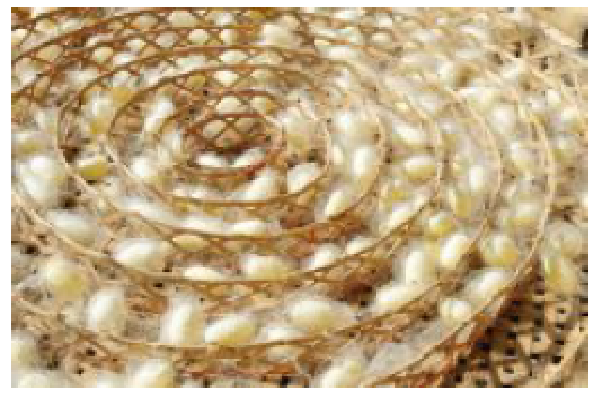
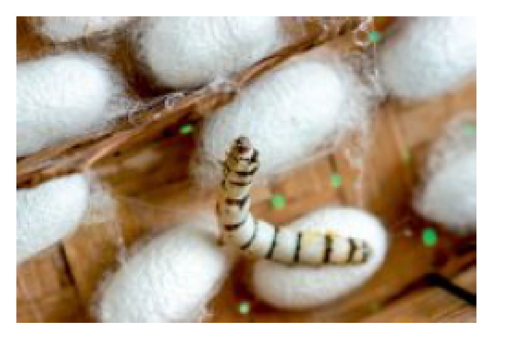
Rayon: A Semi synthetic fibre
In the 19th century scientists were successful in producing the first artificial silk known as rayon. The first rayon factory in India was established in Kerala in 1946. Rayon is a man-made fiber, but it is not considered fully synthetic as it is made out of natural cellulose collected from wood pulp. The cellulose that is collected from wood or bamboo pulp is treated with several chemicals. First sodium hydroxide is added followed by carbon di sulphide. The cellulose dissolves in the chemicals added to it and produces syrup called Viscose. Viscose is forced through a spinneret within bracket a device made of metal plates with very tiny holes into a solution of dilute sulphuric acid. This produces silk-like threads that are cleaned with soap and dried. This new fiber is called rayon.
Some types of rayon are made from the short cotton fibers left on cottonseeds after ginning. Rayon is cheaper than silk, can be woven like natural silk fiber and can be dyed in a wide variety of colors. It can be mixed with cotton to make bed sheets or with wool in the production of carpets and home furnishing products. Rayon is also found in sanitary products, diapers, bandages and gauze for dressing wounds.
Nylon: Synthetic Fiber
Nylon is the first fully processed synthetic fiber. It was popular during the Second World War for the use of parachutes and rope materials for climbing. Nowadays, nylon has replaced natural silk in many textiles, and has become one of the most commonly used synthetic fibers.
Nylon fiber is strong, elastic and light. It is lustrous and easy to wash, which has made it popular for the clothing industry. We use many products made from nylon such as socks, ropes, tents, toothbrushes, car seatbelts, sleeping bags, curtains, etcetera. Nylon thread is actually stronger than a steel wire.
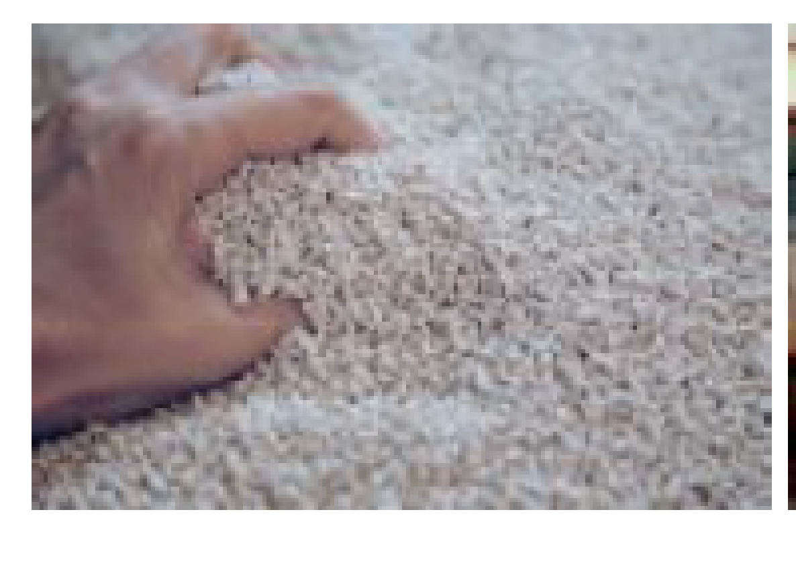
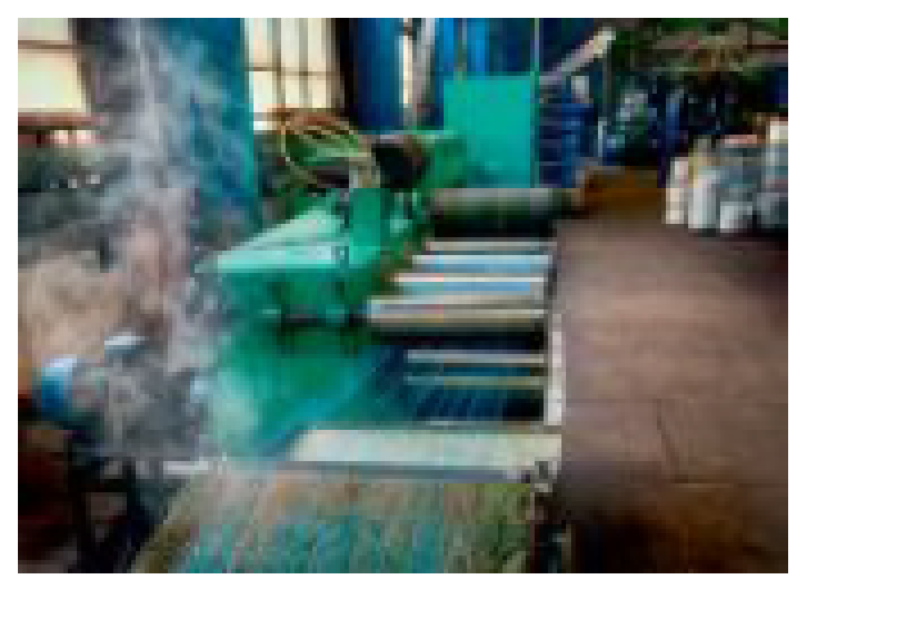
BOX NEWS
DO YOU KNOW?
Nylon is very strong and can be used for rock climbing!
Nylon is a plastic polymer made of chemical units called polyamides. Polyamides are made with monomers – hexamethylenediamine and adipic acid. Solid chips of these polyamides are melted and forced through a heated spinneret which has very, very tiny holes.
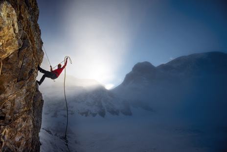
How Strong is Nylon?
Take an iron stand with a clamp. Take samples of cotton, wool, nylon and silk threads of about 50 cm in length.
First tie cotton thread to the stand so that it hangs freely from it. At the free end, attach a CD as plate so that weights can be placed on it. Add weights starting from 10 grams one by one, until the thread breaks. Note down the total weight required to break the cotton thread. Repeat the same activity with the wool, silk and nylon threads.
NOTE: All the varieties of threads should be of same thickness.
Iron clamp with a hold weights.
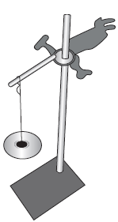
Arrange the threads in the order of increasing strength dash
What do you infer from the above activity?
Dash
Which type of fibre is the strongest?
Dash
Which type of fibre is the weakest?
Dash
Synthetic Fibers
Polyester is another synthetic fiber. It can be drawn into very fine fibers that can be woven like any other yarn. Polyester is sold in the name of polycot, polywool, terry cot, etcetera. Polycot is a mixture of polyester and cotton; Polywool is a mixture of polyester and wool. PET (Polyethylene Terephthalate) is a very familiar form of polyester. It is used for making water and soda bottles, utensils, films and wires amongst many other useful products. Many of the clothes we wear are made out of polyester fibers. Fabrics made from this fiber do not get wrinkled easily and are easy to wash making polyester fabrics suitable for dress materials.
Fill the data in the following table.
SERIAL NUMBER |
Type of thread or fibre |
Total weight required to break the thread within bracket in gram |
1 |
Cotton |
|
2 |
Wool |
|
3 |
Silk |
|
4 |
Nylon |
|
We wear sweaters and use shawls and blankets in the winter. Many of these are not made from natural wool although they appear to resemble wool. These are prepared from another type of synthetic fiber called acrylic. The wool obtained from natural sources is quite expensive, whereas clothes made from acrylic are relatively cheap because they are a byproduct of the production of plastics. They are available in a variety of colors. Synthetic fibers are more durable and affordable which has contributed to their widespread use.
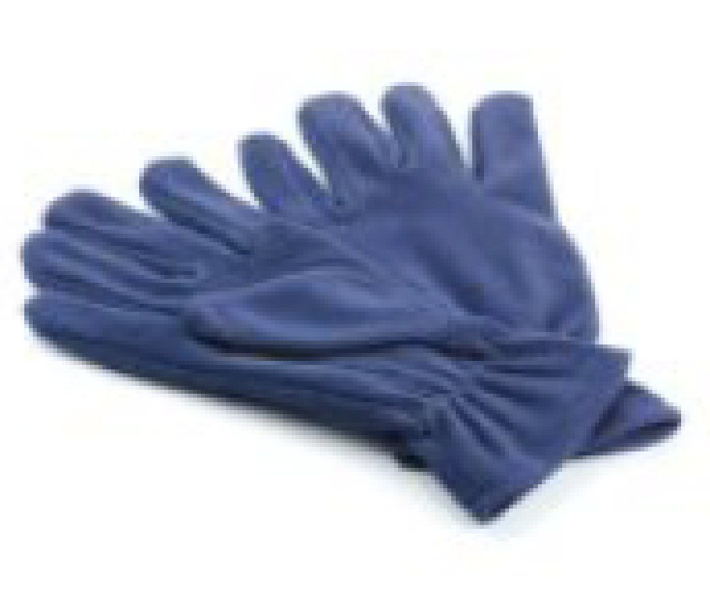
Identify The Fibre: Let us do an activity. Look at the images below and identify and write down the name of the different types of fibre observed.
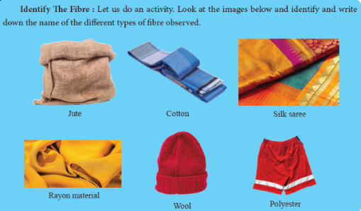
Synthetic or Natural Fibres:
The teacher can give the learner a piece of each and every type of fibre. The learner can feel the fibre and write down the name of the fibre and state whether it is natural or synthetic fibre.
Tabular column:
Serial number |
Name of the fibre |
Type of the fibre Natural OR Synthetic |
|
|
|
|
|
|
We have done four activities so far. Which activity helped you better to identify the type of fibre? Dash
(Both the use of familiar images as well as touch can help us to identify the different types of fibres. Right!) We have learned about fabrics such as polyester, nylon and acrylic and their common uses. These synthetic fibres are polymers which we will learn about later in this chapter.
Characteristics of Synthetic Fibres
Burning A Piece of natural fibre and a synthetic Fibre
Note: This activity should be performed only by the teacher.
Take a piece of cotton cloth and a piece of polyester cloth. Both the pieces of cloth can be of same size within bracket 2cm x 2cm is enough. Hold the pieces of cloth using tongs to protect yourself from the flame and heat. Burn both the pieces of cloth one by one and see what happens when they burn.
What do you observe while the cotton cloth burns?
dash
What do you observe while the polyester cloth burns?
dash
You must have noticed that natural (cotton) fibres burn very differently compared to synthetic (polyester) fibres.
The cotton cloth will burn when it is held in flame. On the other hand, the synthetic polyester cloth will melt on burning. This is one of the disadvantages of wearing clothes made out of synthetic fibres. If a synthetic cloth comes into contact with fire the fabric melts and sticks to the body causing severe burns. Therefore, one should not wear synthetic clothes while cooking or working in a laboratory.
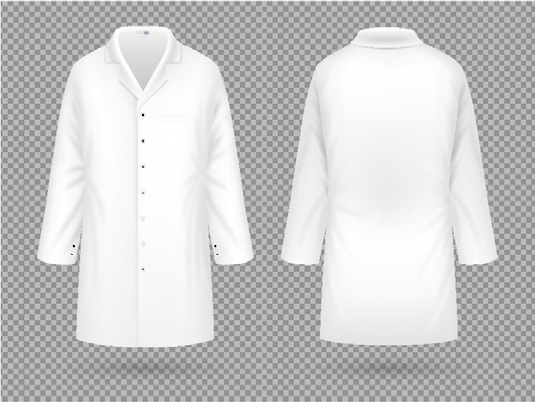
Wetting A Cotton Cloth and An Umbrella Cloth
We use an umbrella on rainy days. What kind of umbrella do we use?
dash
Can you use an umbrella made of cotton?
Let us do an activity to see why we do not use a cotton umbrella to protect ourselves from the rain.
Take a piece of cotton cloth of approximately 10 cm X 10 cm size and a piece of nylon or polyester cloth 10 cm X 10 cm in size from an old unusable or untorn umbrella. Ask four students to hold the four corners of the piece of cotton cloth and pour a glass of water over it. Then ask four students to hold the piece of umbrella cloth and pour a glass of water over it. Compare the effect of water on the piece of cotton cloth and umbrella cloth and record your observation in the notebook.
Dash
Which of these fabrics allows water to pass through?
Cotton cloth or Umbrella cloth within bracket nylon or polyester Now ask the students to put both the pieces of cloth in the hot sun to dry. Which of these fabrics dries the fastest? The cotton cloth or the umbrella cloth? Dash.
BOX ITEM:
DO YOU KNOW?
Synthetic fibres are made from the byproducts of processing petroleum oil and gas. You will learn about fractional distillation of petroleum in your higher classes.
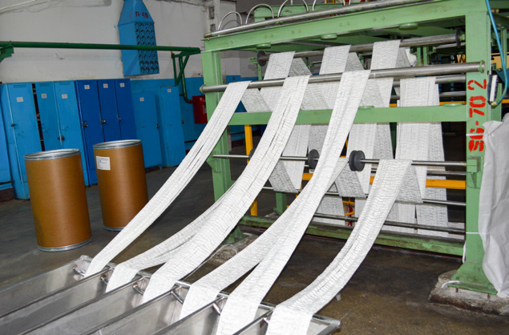
Do you ever think about why some of your clothing does not need ironing and looks bright and colorful for many years? This is because they are made from synthetic fibers such as polyester and the advantages are that they do not wrinkle easily, and they keep their color and brightness for a much longer time than natural fibers such as cotton.
A lot of materials such as fishing nets are made from synthetic fibers. One of the main advantages of using synthetic fibers such as nylon, is that they are stronger than many natural fibers such as silk or wool. For example, a trampoline is made of woven synthetic fibers. These fibers are strong and elastic which gives it the properties to bounce.
We have already learned that it is safer to use cotton clothing instead of synthetic clothing when a person is cooking or working in a laboratory. This is because one disadvantage of synthetic fibers such as polyester is that they are not heat resistant and catch fire easily. In summer it is better to wear clothing that is made out of cotton materials rather than synthetic. This is because most synthetic fibers absorb very little moisture and do not allow air circulation making them hot and uncomfortable to wear.
If you could recall that we already found out that synthetic fibers are made out of petrochemicals and last in the environment for a very long time. The disadvantage is that they break down into very small pieces called microplastics which cause pollution to soil and water bodies such as rivers, lakes and oceans.
Ask yourself what is the first plastic thing you touched today! Maybe it was your alarm clock or the filling in your pillow or the synthetic clothes that you were wearing. Almost everything around us today is plastic. You have seen water and oil in polythene pouches. Right! In the past, people used to bring milk, oil and other liquids from a shop in vessels made of materials such as metal and glass. Think about what the containers, buckets, mugs, chairs and tables used in the past were made of? What do we use today to make many of these products?
Plastic as a material has taken over and replaced metal and wood which were previously used. Plastics have also replaced many glass items. If we continue to write the list of everyday items that are made of plastic, it will be endless! Why is plastic so popular? What are the different uses of plastic? What are the various types of plastics? Let us now learn about plastics:
Plastics have helped us to make advancements in technology, building, healthcare, transport and food safety. Plastics have completely occupied our life because of their characteristic qualities. Plastics have many positive qualities such as lightweight, strong and they can be molded into complex shapes. They are also flexible and water proof and some plastics are even UV resistant. Plastics are also cheap and convenient for us to use. Now that you have discovered why plastics are so popular, let us find out more about the different uses of plastics.
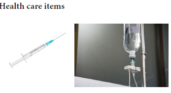
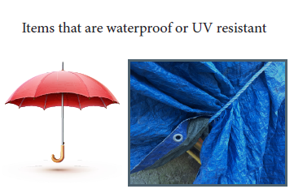
There are different types of plastics that are excellent materials when they are used for the right application. For example, let us take a syringe that is made from a type of plastic called polypropylene. These syringes do not have to be sterilized and reused; hence they provide a high standard of hygiene and eliminate the risk of spreading diseases.
Just as plastic is a material that can be used for a good application, it can also be used for the wrong application. Think about the different items you use that are plastic. For example, a simple article such as a thin plastic carry bag. You use this bag for a very short time and then throw it in a dustbin. Many of these carry bags do not get recycled and they litter and pollute our environment for a long time.
If you want to learn more about plastic which is used for the wrong application then you can refer to the Government of Tamil Nadu’s ban on one-time use and throwaway plastics within bracket Environment and Forests Department, Tamil Nadu Government Order Number: 84, dated 25th June two thousand eighteen, with effect from 1st January 2019
BOX MESSAGE:
DO YOU KNOW?
It is estimated that every year we use a trillion plastic carry bags within bracket 2 million a minute around the world and out of which only 1 to 3 % are recycled.
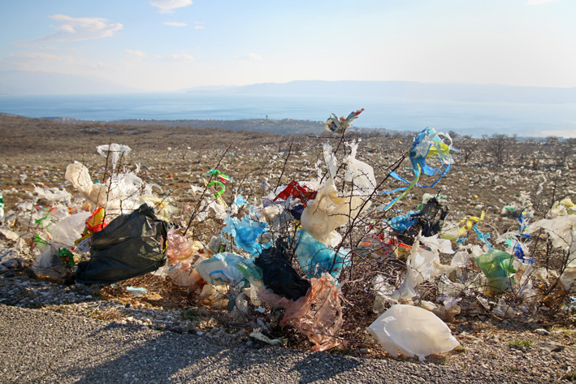
BOX ITEM:
DO YOU KNOW?
Plastic has been around for less than 200 years. Edmund Alexander Parkes was the creator of the first plastic called ‘Parkesine’.
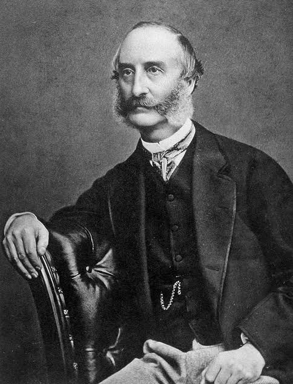
Right and wrong application of plastics
Look at the list of eight plastic items. Decide which four plastic items are used for the right application and which four are used for the wrong application by filling in the chart below:
Plastic items: straws, helmets, cutlery, thin carry bags, syringes, electrical wires, teacups and blood bags.
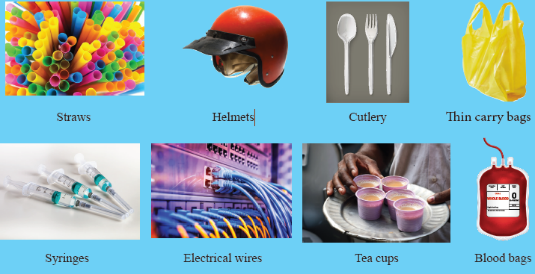
Table messages |
|
Right Application |
Wrong Application |
|
|
The plastics we use in our daily life are also made up of polymers. All plastics do not have the same type of arrangement of units. In some articles, the arrangement of a monomer is linear, and in some other items, the arrangement of articles is cross linked. Depending on the type of arrangement, we have two main types of polymers thermoplastics and thermoset. Let us see what these are!
Thermoplastics Polyethylene within bracket also called polythene is an example of a plastic. It is used for making polythene carry bags which are commonly used. When you burn a polythene carry bag, it melts and turns into liquid along with the production of an offensive odor, a bright flame and soot. Another example is a PET within bracket Polyethylene Terephthalate bottle, when we fill it with boiling water, it gets deformed. Plastics which can be easily softened and bent when heated are known as thermoplastics. These plastics can be modified and turned into another plastic item through the process of recycling.
Thermoset: On the other hand, there are some plastics, which once they are molded, cannot be softened through heating them. These are called thermosetting plastics. Bakelite and melamine are some examples of thermosetting plastics. Bakelite is a poor conductor of heat and electricity. It is used for making electrical switches and handles of various utensils. Melamine resists fire and can tolerate heat. It is used for making floor tiles and fabrics that resist fire.
Two types of polymers
Thermo softening that is thermoplastic
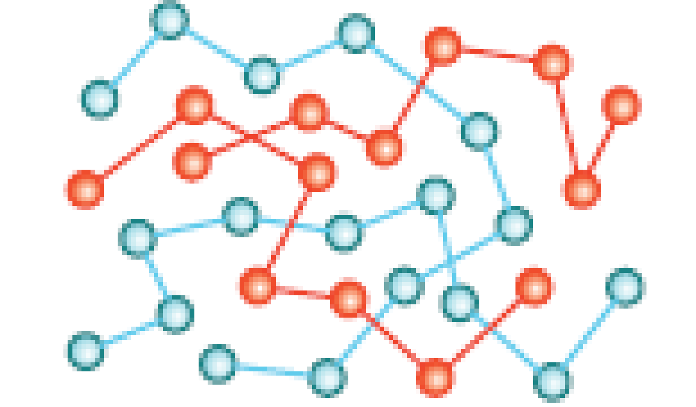
.Tangled polymer chain
No cross links between chains
Weak forces of attraction between chains
Soften when heated
Thermosetting that is Thermoset
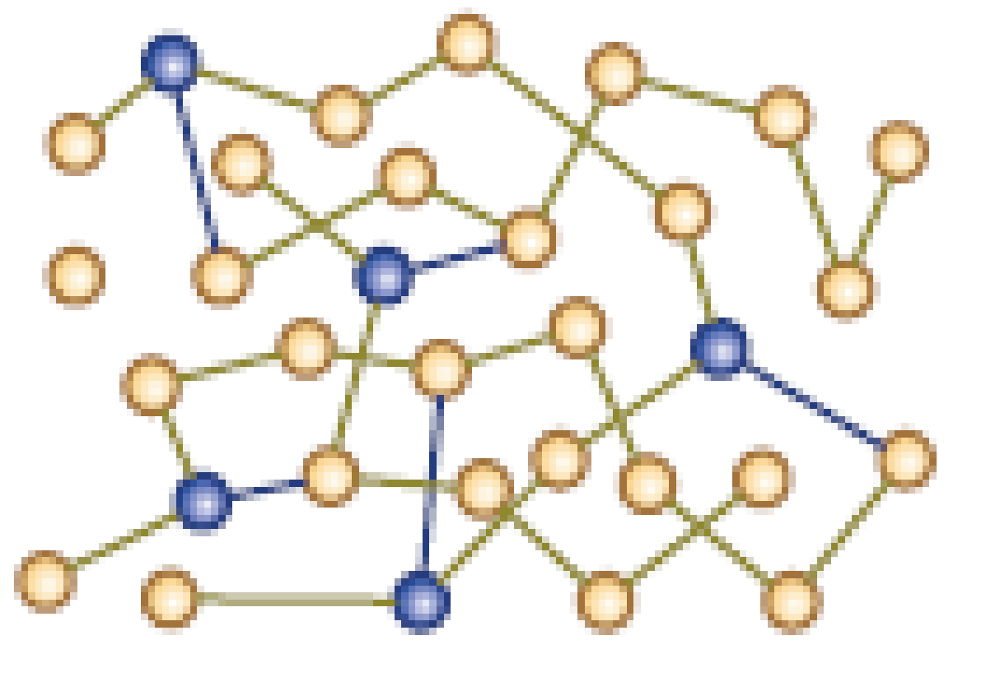
Polymer chains held together
by strong covalent cross lined
banding does that not break on heating
Remains hard when heated
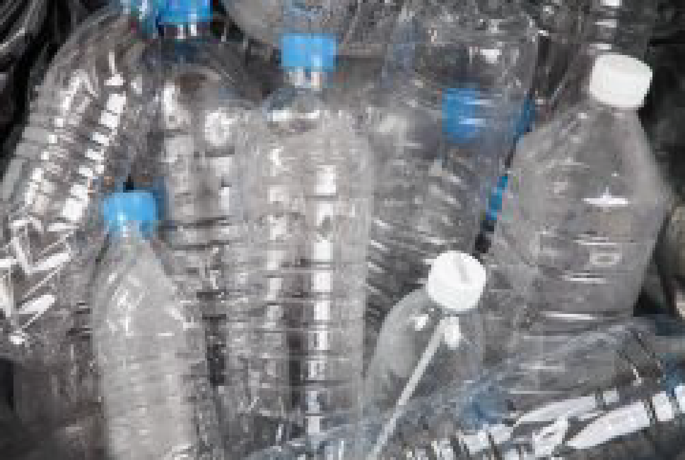
Example of thermoplastic: P E T water bottles
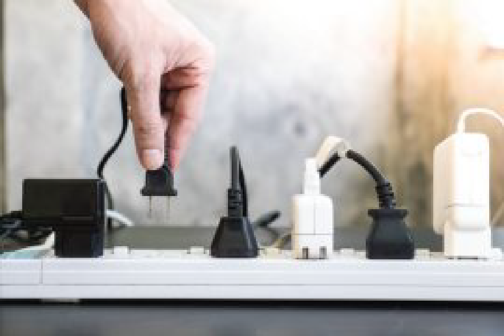
Example of thermoset plastic: electrical switches
Now that you have learnt about the differences between Thermoplastic and Thermosetting polymers, let us find out more about the different types of plastics that you use in your daily life. Plastics are very useful in our daily life, but some types contain dangerous chemicals.
Did you know that there are many different types of plastics?
You can tell these plastics apart by searching for a resin code. The resin codes are a universal way of categorizing different event types of plastic, which helps us separate plastics so that it is easier to recycle them. How can you identify the resin code? Where can you find the resin code on a plastic item?
Look at the chasing arrow triangle-shaped symbol on the bottom of a bottle, on the brand label sticker or on the lid of a container. What number is marked in the center of the triangle? What letters within bracket acronym are below this? This is what we call a resin code.
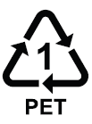
If the number is 1 within the chasing arrow triangle and or has the acronym P E T or P E T E, then it is a type of plastic which is called PET. Now that you have found out that the bottle has a specific resin code, let us see what gives the bottle and other plastic products certain qualities. Different chemicals within bracket additives are added to plastic to give them various qualities and characteristics, for example flexibility, strength, softness or transparency. There are some chemicals that are used in plastics that are dangerous for our health, animals and the environment. For example, Polyvinyl Chloride P V C resin code hash 3 has heavy metals such as cadmium and lead which are toxic chemicals which are harmful to your health. Polystyrene P S resin code HASH 6 has styrene which is a toxic chemical known to cause cancer.
Plastic resin codes can be found on the label or bottom of most plastic items. It is a number or acronym found in the middle of a chasing arrow triangle. There may be other numbers or letters on the plastic items, but these are not resin codes.
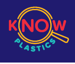
RESIN CODE |
OTHER NAMES |
COMMON ITEMS |
ABOUT |
Whether it will work or won’t work |
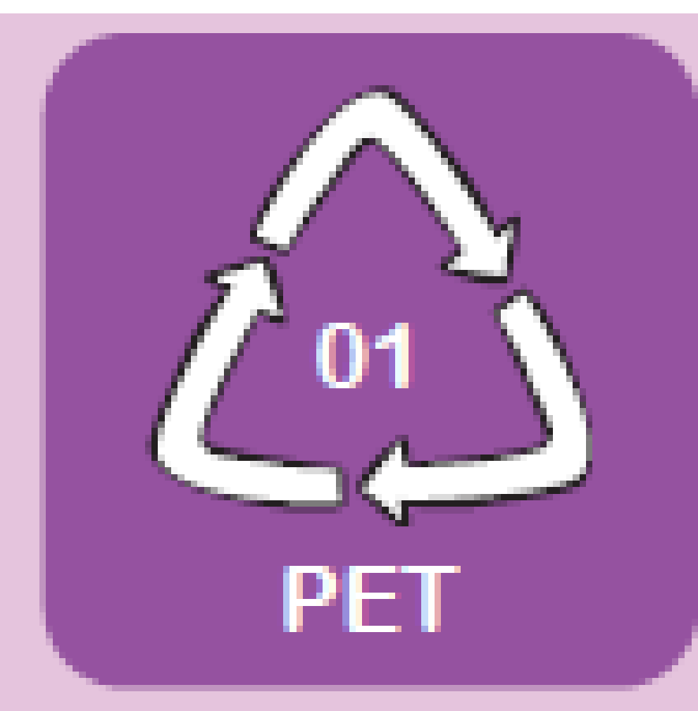 |
PETE, Polyester |
Umbrella, sports clothing, warm fleece jackets or sweaters, rope, sails, polyester fibre made into sleeping bags. |
This plastic is designed to be used only ONCE. Reusing P E T plastic can release a chemical called antimony which is not good for your health. Polyester is the most widely used synthetic fibre for clothes. |
|
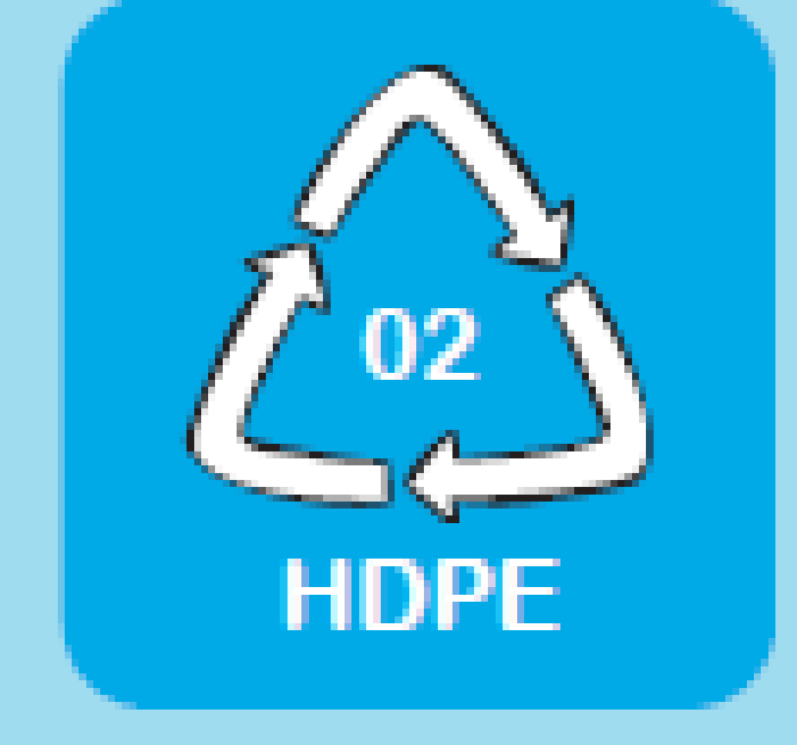 |
PEHD |
Cement or rice or cow food sacks, crocheted or woven tiffin bags, rope, fishing nets, shade nets or structures, fibre reinforced concrete within taken from plastic cans, bulletproof material vests within bracket Ultrahigh Molecular Weight Polyethylene UHMW. |
Considered one of the safer plastics. It is light, very strong and has excellent impact strength. It is an effective moisture barrier. It is widely recycled. |
It will work
|
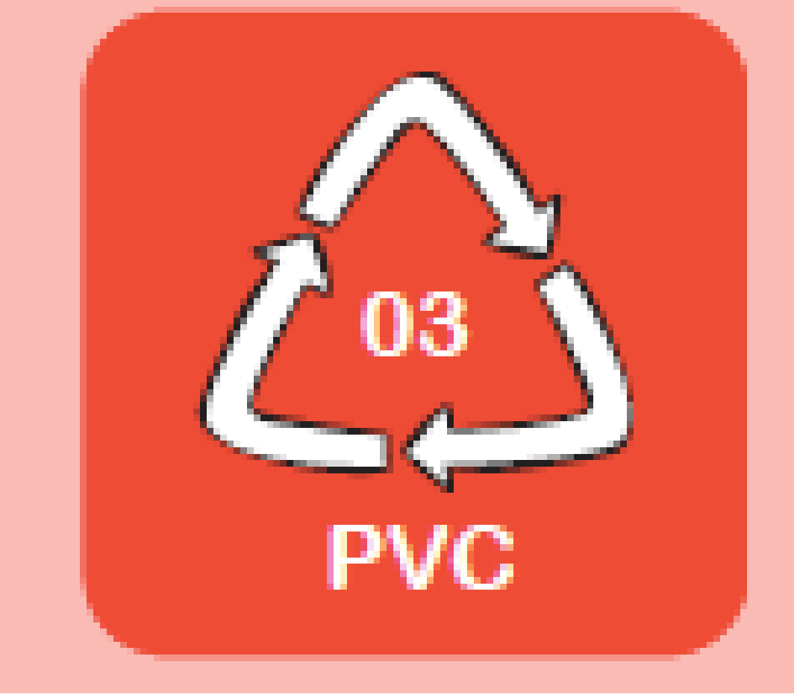 |
V Vinyl |
PVC fibres or Vinyon fibres are used to make shower curtains, outdoor fabrics, raincoats, boots, fishing nets, synthetic yarns, children’s clothing and blankets. Vinyl is used for stickers on clothing, dress costumes and fake leather. |
The most toxic plastic. Vinyon has good resistance to weathering and fire. |
It won’t work |
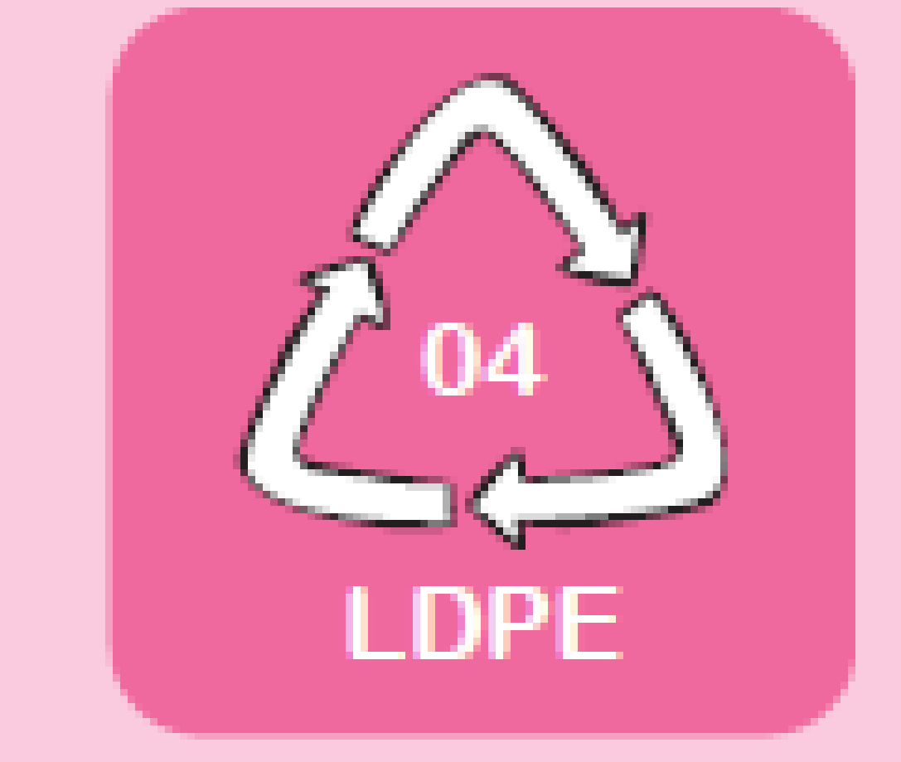 |
PELD, LLDPE |
Heavy-duty sacks, artificial grass or turf for football. |
Considered one of the safer plastics. It is very flexible and soft but strong. |
It will work
|
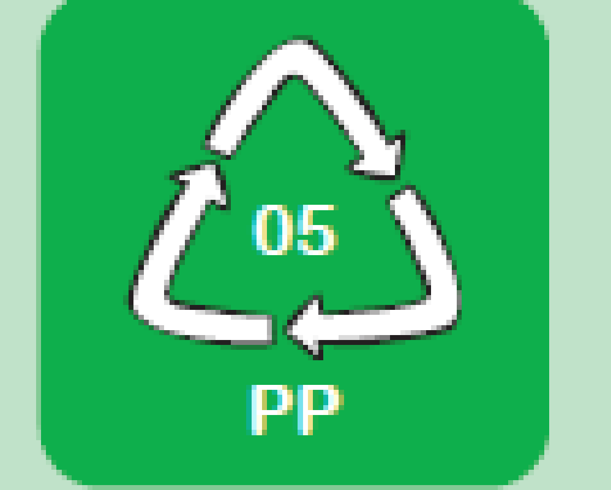 |
PP |
Disposable absorbent articles-diapers, wet wipes for cleaning. Ropes, carpets, clothing, for filtration, battery separators and geotextiles within bracket drainage and erosion control. PP micro fibers are added to concrete to stabilise the mix. |
Considered one of the safer plastics. Nonwoven PP fabrics are made so that they can be used in disposable products that you usually throw away after one use. |
It will work
|
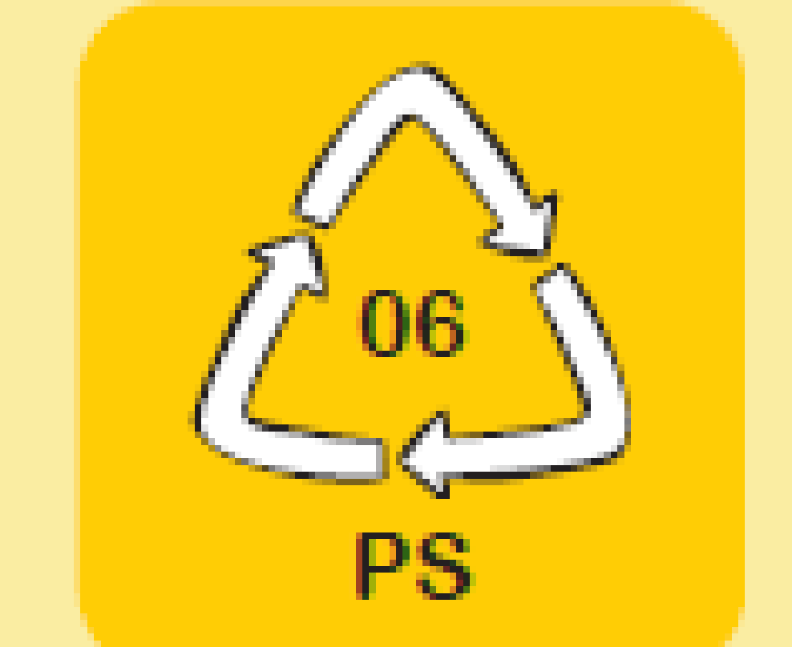 |
Thermocol, E PS X P S and H I P S |
Pens, rulers, throwaway tea and juice cups, plates and cutlery and toys. |
One of the unsafe plastics as it has toxic chemicals. Most PS in the world is made for one time use or throwaway food and drink packaging. |
It won’t work.
|
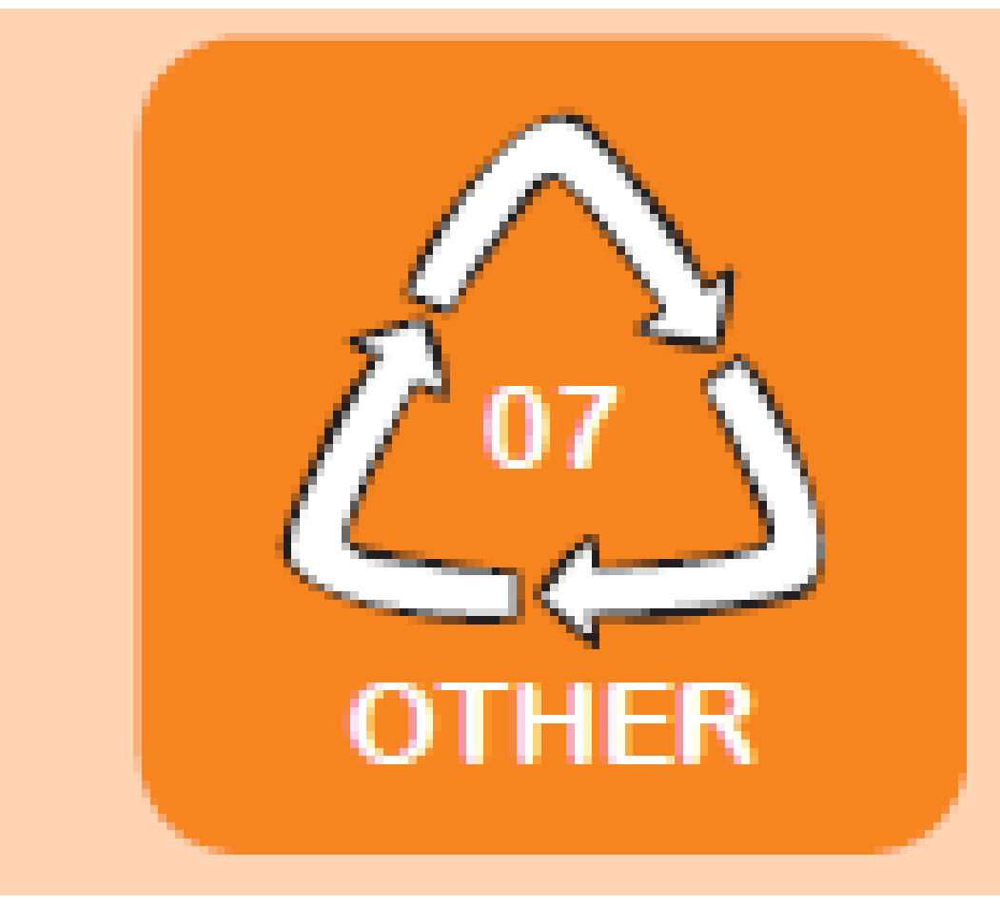 |
Polycarbonate within bracket PC, acrylonitrile butadiene styrene within bracket ABS, acrylic within bracket AC, bioplastics, nylon, polyurethane within bracket PU, etcetera. |
PC: baby bottles & food containers. ABS: helmets and car bumpers. Acrylic: fibre optical cables and paints. Bioplastics: plastic bags and tableware. Nylon: clothes, kites and toothbrush bristles. P U mattress foam and shoe soles. |
This code includes all plastic types that do not fit into the resin codes 1 to 6. PC and ABS are two of the unsafe plastics and are considered toxic. When you see a hash 7 plastic try to know more before buying and using it. |
It won’t work.
|
Does not have resin code or an acronym |
Can be any plastic item.
|
The company did not follow the rules and mark what type of plastic was used. It could be harmful, but you do not have the information to know for sure. Avoid using plastic without a resin code. |
Whether it will work or won’t work |
Identify the different types of plastics.
Collect different kinds of plastic products and look carefully for the resin code and or acronym on them. With the help of the resin code chart, mark the resin code number, acronym, if you think it is a safer, unsafe, or questionable within bracket when you cannot find the resin code on the article type of plastic. What resin codes do you find? Is the resin code safer, unsafe, or questionable?
Tabular column
Product |
Resin code number |
Acronym |
Category of safety |
Use of product |
|
|
|
|
|
|
|
|
|
|
Look at the resin code chart on the previous page to find out more about the different types of plastic, what are common items and which plastics are safe and unsafe for us, animals, and the environment.
Look at the resin code chart to find out more about the different types of plastic, the common items and the plastics that are safe and unsafe for us, animals, and the environment.
Impacts of plastics
Plastics are cheap, light weight, strong and durable and have contributed to a range of advances and benefits to our modern life. But the increase in the use of plastics, particularly the one-time use and throwaway plastics has serious impacts on the environment, animals, and our health.
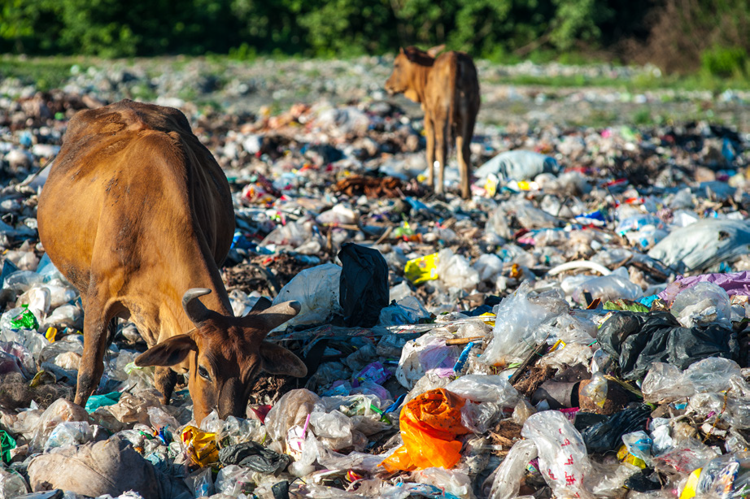
We have seen garbage dumps with different plastics. One big problem with plastics is that they do not decompose or biodegrade. This leads to large amounts of waste that will not disappear and end up accumulating and polluting the environment.
A lot of one-time use plastic such as polythene bags and food packaging that are thrown away are responsible for littering the environment and clogging drains. Standing water breeds mosquitoes that can spread diseases such as malaria, dengue and chikungunya and also lead to flooding.
Why do you think some animals eat plastic? Many animals confuse plastic for food and eat it by accident. When left over food is thrown away it is often packed in plastic. Animals smell the leftover food and eat the plastic by accident. For example, animals in urban areas, particularly cows, often eat polythene plastic bags by accident as they contain food waste. Can you imagine the consequences?
Dash
dash
A lot of the plastic waste we use such as plastics bags, bottles and straws end up in the oceans. Plastics in the ocean are exposed to sunlight, water and the physical movement of the waves, which breaks it down in tiny pieces called microplastics. Some microplastics are also found in household products. Examples are microbeads that can be found in toothpaste, face wash and body scrubs. Microbeads are washed down in drains and end up in the soil, rivers, lakes and the ocean Microbeads are washed down in drains and end up in the soil, rivers, lakes which cause pollution.
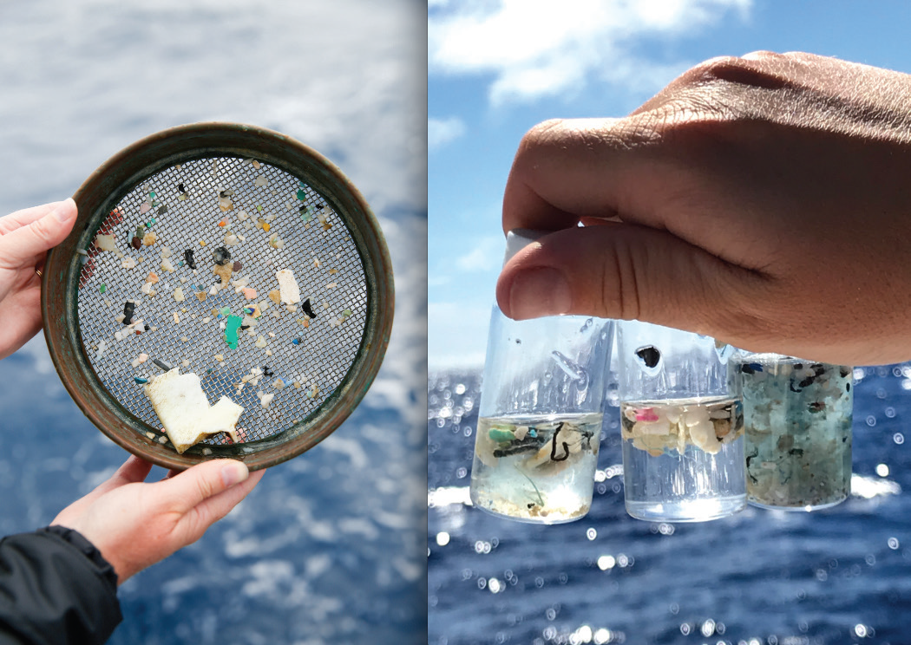
Many birds eat plastic items and small pieces of plastic, which are covered in algae. Once in the stomach of animals, plastics cannot be digested, and this decreases the amount of space for food and can lead to starvation. In 2015, plastics were found in 90 PERCENT of seabirds.
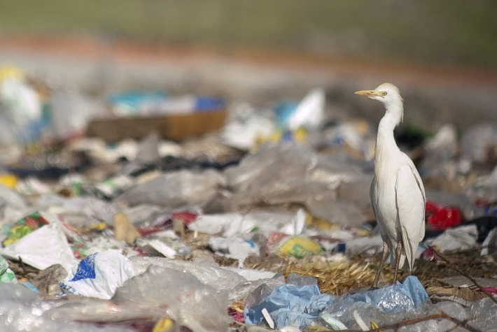
We have already read that Government of Tamil Nadu has banned one-time use and throwaway plastics such as plastic carry bags, plates, straws and water pouches. This is an indication that important efforts are taking place to reduce negative consequences of plastics on the environment.
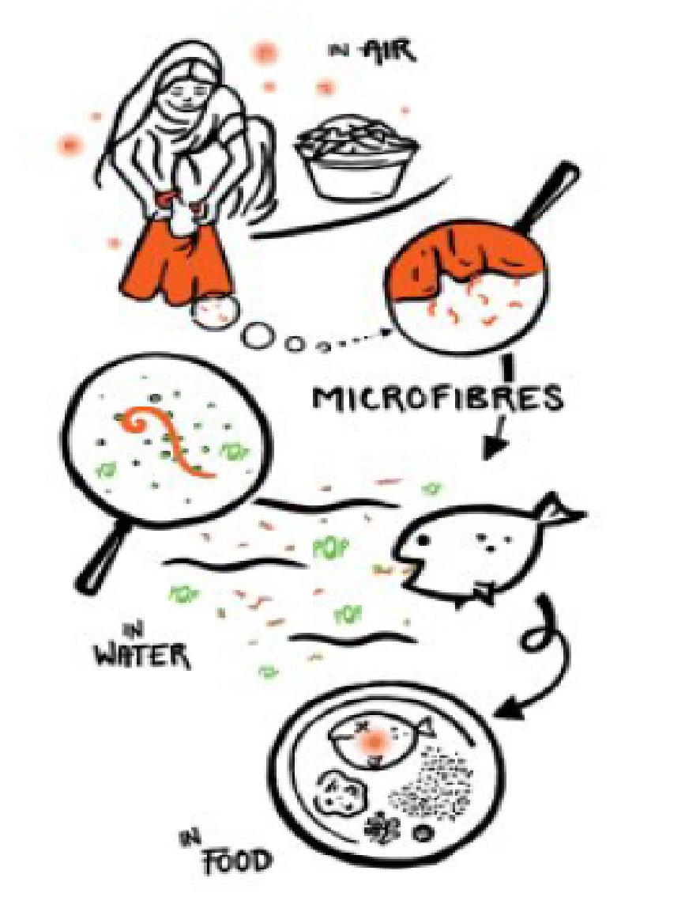
Can you see how much plastic litter pollutes our environment? How nice would it be if a material that had similar qualities to plastic could be biodegradable, be absorbed by the soil and give nutrients to the soil!
BOX MESSAGES:
DO YOU KNOW?
We have seen that synthetic clothes are made from plastic. Every time we wash synthetic clothes, small fibres called microfibers escape and end up in the soil, streams, rivers and oceans.
Dangerous pollution called Persistent Organic Pollutants within bracket POPs. floating in the ocean sticks to these small pieces of plastic making them toxic. Marine animals such as shrimp and fish often eat microplastics, confusing them for their natural source of food. The toxins build up in these animals and move up the food chain and can end up in our bodies. Microplastics can be found in the food we eat, the water we drink, and the air we breathe.
Yes, scientists have thought about alternatives to synthetic plastics and have found Poly Lactic Acid within bracket PLA. a substitute for some types of plastics. Poly Lactic Acid or polylactide is compostable and bioactive thermoplastic. This polymer is obtained from plant starch such as corn, sugarcane and pulp from sugar beets. PLA is a biodegradable material. It is useful for making food packaging, garbage bags and disposable table ware.
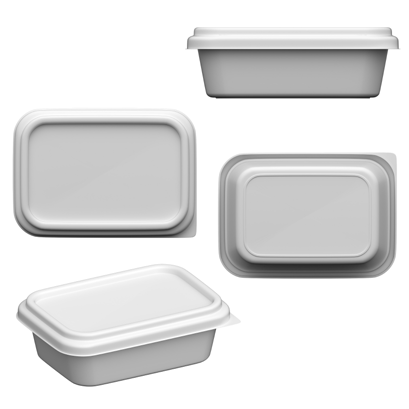
Plastics are everywhere! Our increasing consumption and production of plastic waste needs a solution. Let us find out more about how and where plastic waste is disposed of and the better methods of disposing plastics.
Organic waste such as the peels of vegetables, fruits and food remains can get broken down by bacteria in the soil to create a rich source of nutrients in the form of compost. A material that gets decomposed through natural processes and action by bacteria is called biodegradable.
Plastics do not decompose by natural processes and action of bacteria and are therefore not biodegradable. It is important for us to separate our biodegradable and non-biodegradable waste and dispose of them separately. A lot of the plastic produced globally is designed to be used only once and thrown away, creating a large amount of plastic waste. Plastic waste ends up being recycled, incinerated, landfilled, dumped, or ends up littering our environment. It is estimated that from all the plastic waste ever produced, 79 percentage is in landfills, dumps or in the environment, 12 percentage has been incinerated and only a small 9 percentage is recycled.
Let us learn more about what happens with the plastic waste. One way to look at plastic disposal is the 5R Principal Refuse, Reduce, Reuse, Recycle and Recover. We have already learned about the waste pyramid and how the different methods of waste disposal can be seen in terms of the best option to the least favourable in this order Refuse within bracket Avoid, Reduce, Reuse, Recycle, recover within bracket Compost, and Incinerate and Landfill.
Refuse within bracket Avoid
The best thing to do is to avoid using plastic products. One time use throwaway plastics can often be avoided. For example, we can carry cotton or jute bags when we go shopping and say no when a shopkeeper offers us a plastic bag.
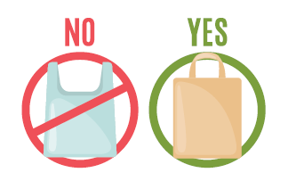
Reduce
Reducing the amount of plastic we use is important. Before buying a plastic product, we can check to see if there are any substitutes or alternatives that can be used. If we use fewer plastics, we will create less plastic waste. However, even if we try to reduce the amount of plastics we use and throw away, it is impossible to stop using plastics completely.
Reuse
If possible, products made of plastics can be used again and again. For example, if we have a plastic bag in good condition, instead of throwing it away we can use it again the next time we go for shopping. If we have a plastic product and if you do not feel like using it again, we can give it to others instead of throwing it out.
Recycle
It is better to recycle plastic waste. Separating plastic waste and making sure it gets recycled is good as it turns waste materials into something new. Then it will not be thrown away in landfills, open dumps or ending up as litter in the environment. Many thermoplastics can be recycled. They can be softened by heating and can be made into another article by recycling, but thermosetting plastics cannot be recycled. Recycling plastics is challenging, and it is important to know that plastics cannot be recycled forever. There are so many different types of plastics, which are often mixed together making it difficult to separate them back into the original material. Every time plastic is melted and recycled it loses quality, this is called ‘downcycling’. Recycling of plastic waste cannot be the only solution to plastic pollution.
Recover within bracket Compost and Incinerate
Solid waste can be converted into resources such as electricity and compost through thermal and biological means. Burning plastics in a large furnace or in the open is bad for the environment.
Open burning releases toxic pollutants into the air and soil, which are harmful to our health, animals and the environment. Burning plastics at high temperatures in incinerators and trapping the gases and collecting the toxic ash is widely used to produce energy. This is often seen as a positive way to deal with plastic waste. However, burning plastics releases super toxic gases, and the remaining ash contains toxic chemicals and heavy metals. Burning of plastics is not a good solution, as we end up wasting non-renewable resources and produce super toxic chemicals that are difficult to store or dispose safely.
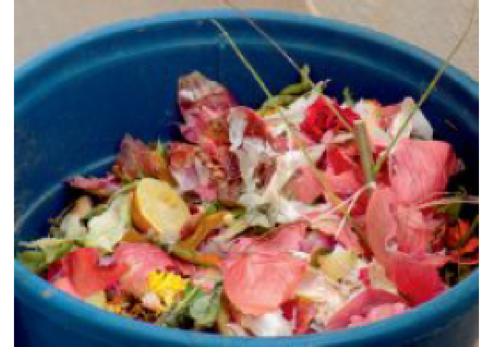
Compost Your organic waste.
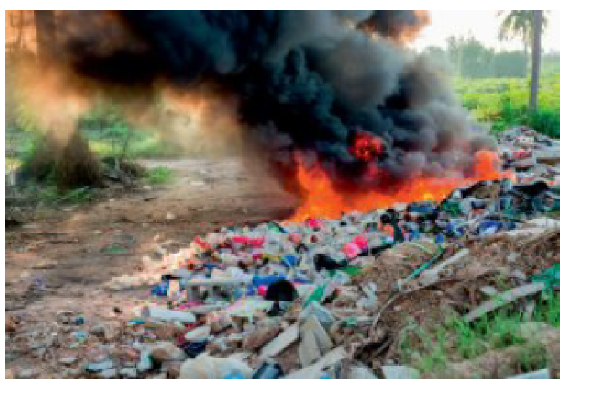
Open burning and incineration
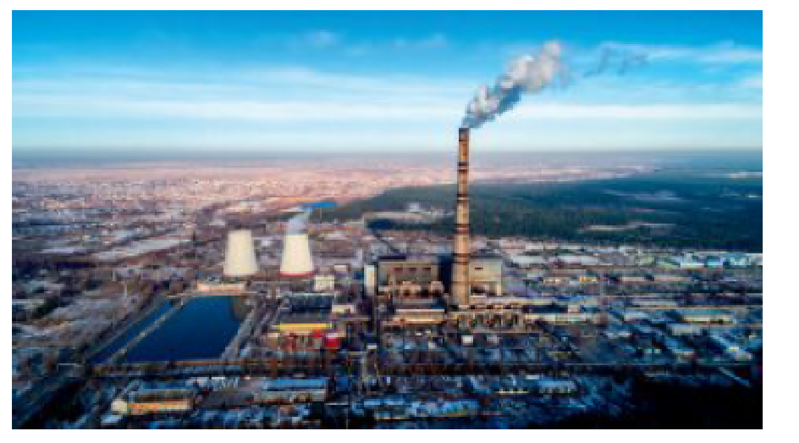
Landfill
Plastic waste often ends up in landfills that are huge holes where waste is buried to keep it separate from the environment. This is the most common way for plastics to be disposed of around the world. Plastics make up 7 to 13 percentage of waste that is sent to landfills on a global scale. Plastics in landfills can still lead to pollution of the air, soil and groundwater. Over time landfills can degrade, and the toxic chemicals in certain plastics can leak out into the environment.
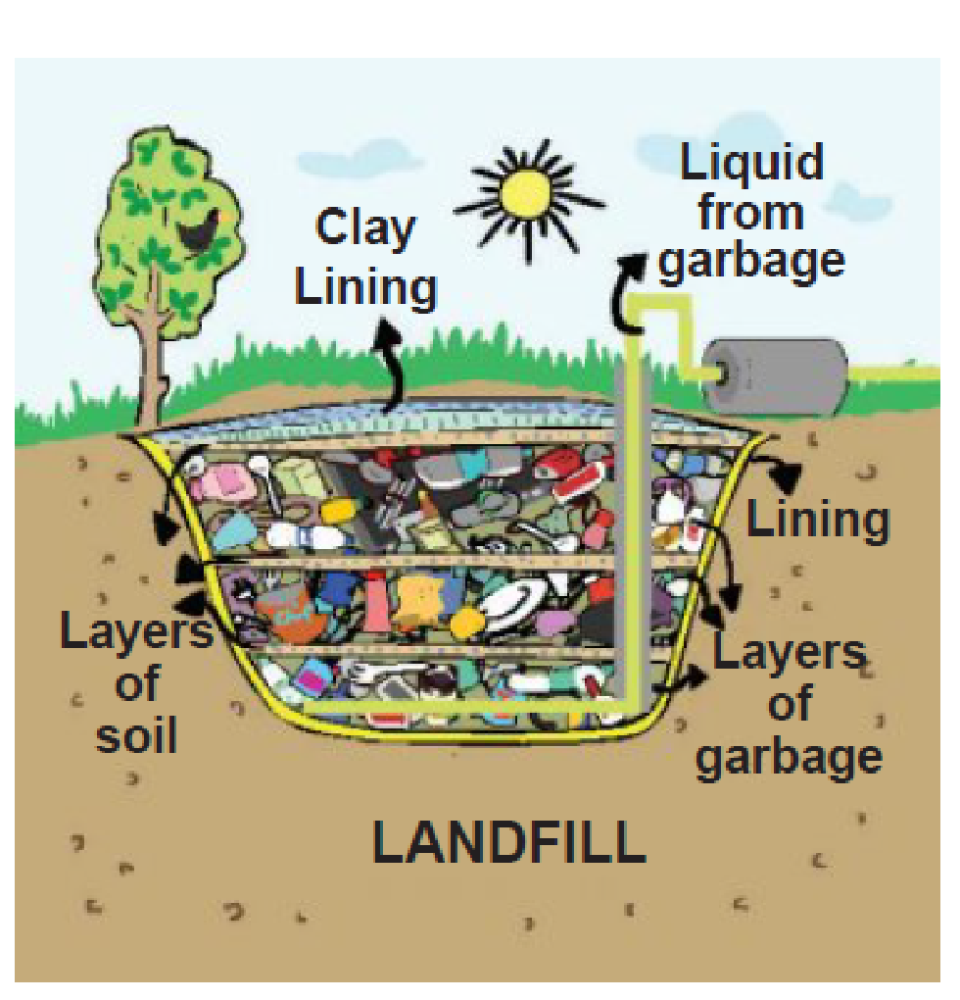
The concept of biodegradable plastics or bio plastics was first introduced in the 1980s. Based on the nature of degradation, there are two main types of plastics degradable plastic and compostable plastic.
Degradable plastics are made from petroleum oil or gas which is the same as conventional plastics. The difference is that they have a chemical or additive added to them to make them break down faster than conventional plastics when they are exposed to sunlight, oxygen, or water. What do you think will happen to degradable plastics? Degradable plastics break down into tiny pieces called microplastics and these stay in our environment for a very long time. It is very important to understand that degradable plastics do not break down completely in the environment Scientists have found that microplastics in the ocean are really bad and it is likely that these tiny pieces in the soil are also harmful.
Compostable plastics are derived from renewable resources such as corn, sugar cane, avocado seeds, or shrimp shells. Compostable plastics can be broken down completely by microbes and turned back into food for plants carbon dioxide, methane, water, and other natural compounds.
BOX MESSAGE:
DO YOU KNOW?
A recipe for PLA a compostable plastic!
What you need
1. 1 tablespoon of corn starch
2. 1 teaspoon of vegetable glycerine within bracket available at the pharmacy
3. 1 teaspoon of vinegar within bracket 5 percentage acidity
4. 4 Tablespoons of water.
5. Cooking spoon
6. Cooking pot
7. Stove
8. Aluminium foil
Method
Mix the water with the starch in a cooking pot. Add the vinegar and the glycerine. Mix all the ingredients on medium heat. Make sure you continuously stir. The mixture should turn from liquid white into a clear gel. When it begins to bubble, then it is ready and should be taken off the stove.
Spread the gel onto the aluminium foil. Let it cool down for one hour. You can then shape the material to form a cup or bowl. Let the article you made cool for another 24 hours before you try and use it.
In 2016, scientists from Japan tested different bacteria from a bottle recycling plant and found that Ideonella sakaiens is 201 F6 could digest the plastic used to make single use drinks bottles that are made of polyethylene terephthalate with in bracket P E T. The bacteria work by secreting an enzyme known as ‘PETase’, that breaks down plastic into smaller molecules. These smaller molecules are then absorbed by the bacteria as a food source. The working of the enzyme is diagrammatically shown below.
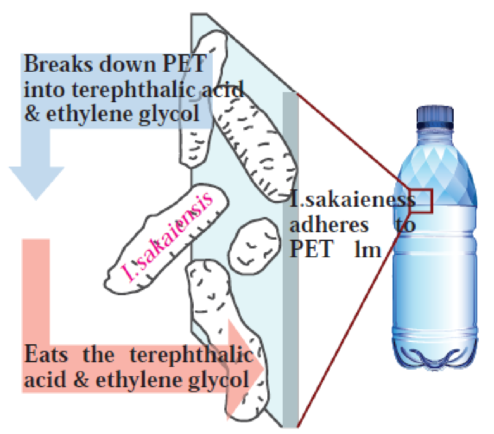
Although the discovery of the bacteria breaking down plastics is seen as a potential solution to the plastic pollution it is still very complex! A big issue is the scale of the plastic pollution problem. We consume and produce such large quantities of plastics, and this is only increasing. The scale of the bacteria breaking down plastics is much slower and will therefore not solve the crisis we are facing.
Another limitation is that it is restricted to PET resin code hash1 plastics, which currently is one of the most recyclable plastics worldwide. It will not be a feasible solution to the issue of the large quantities of non-recyclable low grade plastics which are polluting the environment. That is why it cannot be the solution to plastic pollution on its own!
Glass can be found wherever we look a glass window or glass mirror or glass light bulb. Glass is one of the world’s oldest and most versatile human created materials. Glass is the only material that can be recycled over and over again without losing its quality. Glass is bit of a riddle. It is hard enough to protect as, but it shatters with incredible ease. It is made from opaque sand, yet it is completely transparent. Most surprisingly, it behaves like a solid material, but it is also a sort of weird liquid in disguise.
Glass is prepared by heating within bracket S i O 2 silicon di oxide until it melts, say to about 1700 degree Celcius and Sodium Carbonate is added to it. Then it cooled down really fast. When S i O 2 silicon di oxide melts, the silicon and oxygen atoms break out of their crystal structure. If we cooled it slowly, the atoms would slowly line up back into their crystalline arrangement. But if we cool the liquid fast enough, the atoms of the silica will be halted in their tracks, they won’t have time to line up, and they will be stuck in any old arrangement, with no order to the arrangement of the atoms. We call materials like this as amorphous. At this stage, glass is linear in arrangement inorganic in nature and has a structure very similar to glass and they are considered as polymers.
In a commercial glass plant, sand is mixed with waste glass within obtained from recycling collections, soda ash within bracket sodium carbonate and limestone within bracket calcium carbonate and heated in a furnace. The soda ash reduces the sand’s melting point and produces a kind of glass that would dissolve in water. The limestone is added to stop that happening. The end product is called soda-lime-silica glass. It is the ordinary glass we mostly use in our daily life.
Usually, other chemicals are added to change the appearance or properties of the finished glass. For example, iron and chromium-based chemicals are added to the molten sand to make green tinted glass.
Oven proof borosilicate glass within bracket widely sold under the trade mark PYREX. is made by adding boron oxide to the molten mixture.
Adding lead oxide makes from a sandwich or laminate of multiple layers of glass and plastic bonded together.
Toughened glass used in car winds shields is made by cooling molten glass very quickly to make it much harder.
When silver iodide is added to molten glass the glass obtained becomes dark glasses when exposed to sunlight or any other light. These glasses are used in the production of lenses for eyes and spectacles.
Fibers are long strands of molecules interwoven to form linear, string-like structures that can be woven, knitted, matted, or bonded.
Fibers can be natural or synthetic.
Our increasing consumption and production of waste has negative impacts on humans, animals, and the environment.
Nylon is a synthetic fiber made from petrochemicals oil and gas.
Polycot is a mixture of polyester and cotton, Polywool is a mixture of polyester and wool.
Synthetic fibers melt on burning while cotton fibers catch fire on burning.
Polymers are very long chains made of repeating smaller molecules called monomers that are joined together with different types of bonds.
Plastics that get deformed easily on heating and can be bent are known as thermoplastics.
Plastics that do not get deformed easily on heating and cannot be bent are known as thermosetting plastics.
There are many different types of plastics. Some of which are safe or unsafe for us. We can find out what type of plastic an item is by identifying the resin code or acronym found on it.
Poly Lactic Acid or polylactide is a biodegradable and bioactive thermoplastic.
The management of plastics can be considered by the 5 R Principle Refuse, Reduce, Reuse, Recycle and `Recover as well as to Landfill.
Ideonella Sakaiensis 201 F6 is a bacterium discovered by scientists that digests plastic resin code hash 1 PET used to make single use drinks bottles.
1. Choose the correct answers
1. The first man-made fiber is dash
a) Nylon
b) Polyester
c) Rayon
d) Cotton
Answer: c) Rayon
2. Which of the following is the strongest? DASH
a) Rayon
b) Nylon
c) Acrylic
d) Polyester
Answer: b) Nylon
3. When you place a natural fiber in a flame it DASH
a) melts
b) burns
c) gets nothing
d) explodes
Answer: b) burns
4. A synthetic fiber which has similar properties to wool is DASH
a) Nylon
b) Polyester
c) Acrylic
d) PVC
Answer: c) Acrylic
5. A good application of plastic is the use of DASH
a) Blood bags
b) Plastic cutlery
c) Plastic straws
d) Plastic carry bag
Answer: a) Blood bags
6. DASH is a non-biodegradable material
a) Paper
b) A plastic bottle
c) Cotton cloth
d) Wool
Answer: Wool
7. PET is the acronym for DASH
a) Polyester
b) Polyester and terylene
c) Polyethylene terephthalate
d) Polyethene Terylene
Answer: Polyethylene terephthalate
2. Fill in The Blanks
1. dash is an example of polyester fabric.
Answer: Rain coat
2. dash are used to identify different types of plastics.
Answer: resin coat
3. A dash is a long chain made up of many repeated small units called monomers.
Answer: Polymer
4. A natural fiber is called dash
Answer: Plant fiber
5. A natural fiber obtained by boiling cocoons is called dash
Answer: Silk
3. True or False
1. A lot of plastic pollutes our environment.
Answer: True
2. Refuse with in bracket avoid. is the best way to manage plastic.
Answer: True
3. It is good to wear clothes made of synthetic fibers while cooking.
Answer: False. Correct statement: It is good to wear clothes made of fibers while cooking
4. Degradable plastics break down into tiny pieces called microplastics.
Answer: True
5. Cotton is a natural polymer.
Answer: True
4. Match the Following
Nylon Thermoplastic
PVC Thermosetting plastic
Bakelite fiber
Teflon Wood pulp
Rayon Nonstick cookware
Answer:
Nylon fiber
PVC Thermo plastic
Bakelite Thermosetting plastic
Teflon Non-stick cookware
Rayon Wood pulp
5. Arrange in Correct Sequence
1. Mix water, starch, vinegar and glycerin in a cooking pot.
2. Let the article cool for 24 hours before we use it.
3. Shape material to form a cup or bowl.
4. Continuously mix on medium heat until the liquid turns clear.
5. When the liquid begins to bubble it is ready to be taken off the stove.
6. Spread the gel onto aluminum foil and cool.
Answer:
1. Mix water, starch, vinegar and glycerin in a cooking pot.
2. Continuously mix on medium heat until the liquid turns clear.
3. When the liquid begins to bubble it is ready to be taken off the stove.
4. Spread the gel onto aluminum foil and cool.
5. Shape material to form a cup or bowl.
6. Let the article cool for 24 hours before we use it.
6. Analogy
1. Cotton: natural: Polyester: DASH
Answer: Synthetic
2. PLA spoon: compostable: Plastic spoon: DASH
Answer: Disposable
3. Nylon: melts on heating: Silk: DASH
Answer: Burns on heating
7. Assertion and Reason
1. Assertion Vegetable peels buried in the soil disappear within two weeks. Reason Vegetable peels are compostable.
2. Assertion It takes a very long time for nylon clothes to break down into microfibers, but cotton clothes need only six months to decompose. Reason Nylon made out of petrochemicals is non-biodegradable and cotton cloth is biodegradable.
3. Assertion It is good to avoid plastics. Reason Plastics end up polluting the environment.
8. Crossword
Across
Down
5. A type of fibre that is naturally obtained from a cocoon.
6. A synthetic fibre classified as polyester.
7. A polymer used for making rope.
Crossword puzzle table given.
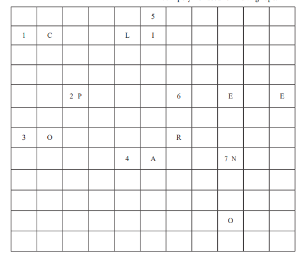
9. Very Short Answer
1. What is the chemical name of the polymers that make up cotton?
Answer Cellulose
2. What gives plastic different qualities and characteristics?
Answer Different chemicals are added to plastic to give them various qualities and characteristics.
3. It is not advisable to burn plastic and synthetic fabrics. Why?
Answer Produces lots of poisonous gases causing air pollution.
4. A bucket made of plastic does not rust like a bucket made of iron. Why?
Answer plastic is a non reactive material and does not react with air and water and get rusted like iron.
5. Why is it better to avoid the use of plastic products?
Answer plastics are non-biodegradable substances that take several years to decomposes.
6. Give two examples of thermosetting plastics.
Answer Bakelite and urea-formaldehyde resins
7. What is the 5 R principle?
Answer Refuse, Reduce, Reuse, Recycle and Recover.
10. Short Answer
1. What does the term biodegradable mean?
2. What kind of fabric is suitable to dress-up and play in the summer?
3. How do plastics impact animals and the environment?
11. Long Answer
1. List the advantages and disadvantages of synthetic fibers.
2. Suggest safe methods of disposing plastics.
12. Higher Order Thinking Skills
1. The Tamil Nadu Government has banned the use of one-time use throwaway plastics. Why do you think this is important?
2. A plastic bag dumped in the soil stays without breaking down for 500 years. If a new generation starts in every 30 years, how many generations would it take to see the plastic bag finally broken down?
13. 1) Fill in the blanks
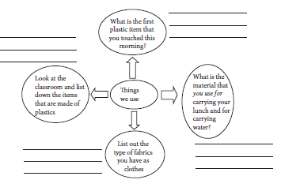
2) Look at the following picture and explain what is happening.
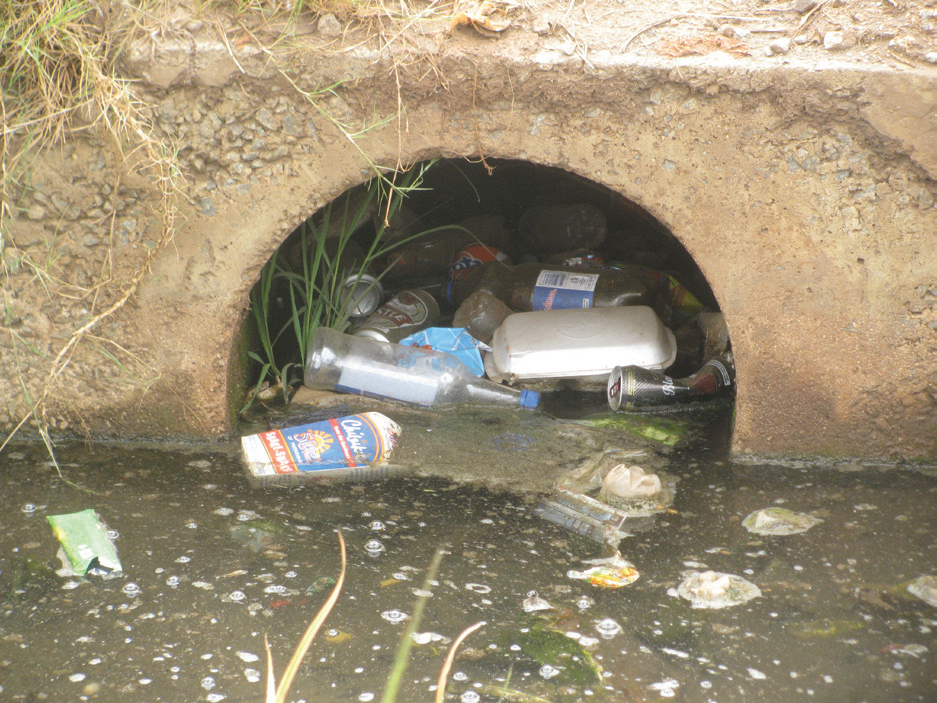
3) Read the following information and convert them into a graph to compare the countries and the amount of plastic they use. China contributes the highest share that is around 28 percent of the total plastic used globally. Indonesia uses 10 percentage, both the Philippines and Vietnam use 6 percentage each; Thailand uses 3.2 percent, Egypt 3 percent, Nigeria 2.7 percent and South Africa 2 percent.
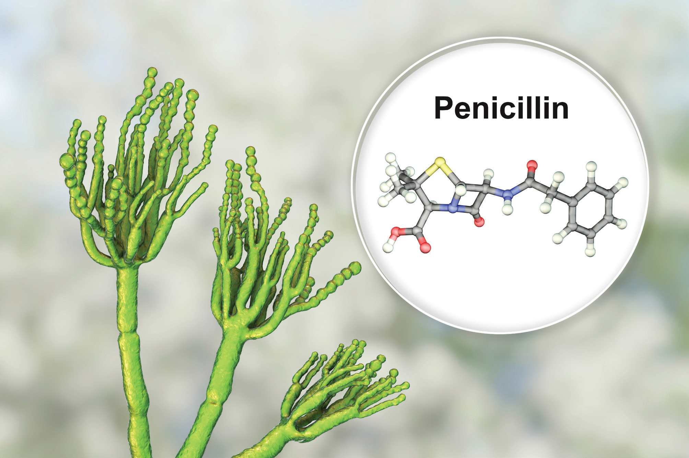
Understand the meaning of Medicines, Antibiotics, Analgesics, Antiseptics, Antihistamines, Antacids and Oral Rehydration Solution within bracket O R S
Understands combustion and its types
Recognizes flame and its structure.
During the Bangladesh liberation war, Therapy with Oral Rehydration Solution within bracket O R S in 1971 reduced cholera death rates from 50 percent to 3 percent among thousands of refugees. An Indian doctor, Dilip Mahala Nabis, had to manage the shortage of saline bottles and coup up with the dehydration faced by the refuges. Dr Dilip Mahala Nabis showed the efficacy of O R S in cholera cases among Bangladeshi refugees within bracket 1971 to 1972. Further field trial during the cholera epidemic in Manipur attested to its efficacy, O R S has since saved the lives of millions of children around the world.
Look at the above information. What do you infer from this? Now you get the curiosity to know about O R S and its function. Don’t you? In addition to this, let us know about some of the common medicines and how do they work.
In the normal healthy intestine, there is a continuous exchange of water through the intestinal wall. Up to 20 liters of water is secreted and very nearly as much is reabsorbed every 24 hours. This mechanism allows the absorption of soluble metabolites into the bloodstream from digested food. However, when a person becomes sick, due to diarrhea, water is expelled and the body is not able to retain the liquid balance. This is called as ‘dehydration’. It is not the diarrhea that kills, but the dehydration’ resulting from the infection that kills. If more than 10% of the body’s fluid is lost death occurs.
Do you know?
UNICEF or WHO norms the O R S should be prepared as follows:
Serial Number |
New O R S |
Gram or Litre |
percentage |
New O R S |
Milli mol or litre
|
SerialNumber 1 |
Sodium chloride |
Gram or Litre 2.6 |
percentage 12.683 |
Sodium
|
Milli mol or litre 75 |
SerialNumber 2 |
Glucose, (anhydrous) |
Gram or Litre 13.5
|
percentage 65.854 |
Chloride |
Milli mol or litre 65 |
SerialNumber 3 |
Potassium chloride |
Gram or Litre 1.5 |
percentage 7.317 |
Glucose, anhydrous |
Milli mol or litre 75
|
SerialNumber 4 |
Trisodium citrate, (dehydrate) |
Gram or Litre 2.9 |
percentage 14.146 |
Potassium
|
Milli mol or litre 20 |
Serial Number 5 |
|
|
|
Citrate
|
Milli mol or litre 10 |
|
Total |
20.5 |
100.00 |
Total Osmolarity |
245 |
O R S within bracket Oral Rehydration Solution is a special combination of dry salts that is mixed with safe water. It can help to replace the fluids lost due to diarrhea. Vomiting and sweat. In a state of diarrheal disease there is imbalance and much more water is secreted than reabsorbed causing a net loss to the body which can be as high as several liters a day. In addition to water loss, sodium and potassium are also lost.
Certain concentration of sodium within bracket N a is needed for proper functioning of the body. For example, only with adequate sodium concentration in the intestinal wall, water can be absorbed by it through a process known as osmosis. If there is inadequate salt in the intestinal wall the body will not be able to absorb water.
The saline bottle directly transfers water and sodium into the blood stream. However, for the saline water is administered through mouth, intestinal wall, is a not able to absorb neither water nor sodium. Dr Dilip Mahala Nabis found that if glucose that means sugar, is added to the salt solution, then all the three water, sodium and glucose are absorbed by the body.
During diarrhea the intestine is still able to absorb glucose molecules. Thus, the O R S solution uses the glucose molecules to enable the sodium to be is carried through by a cotransport coupling mechanism. O R S is an effective treatment for 90 to 95 percent of patients suffering from diarrhea, regardless of the cause. As the water is replaced balance is attained saving the patience in most cases.
Let us see homely made of O R S, be very careful to mix 6 level teaspoons of sugar and half level teaspoon of salt dissolved in 1 liter of clean water. Too much sugar can make diarrhea worse. Too much salt can be extremely harmful to the child. Making the mixture a little too diluted Within bracket with more than 1 liter of clean water is not harmful.
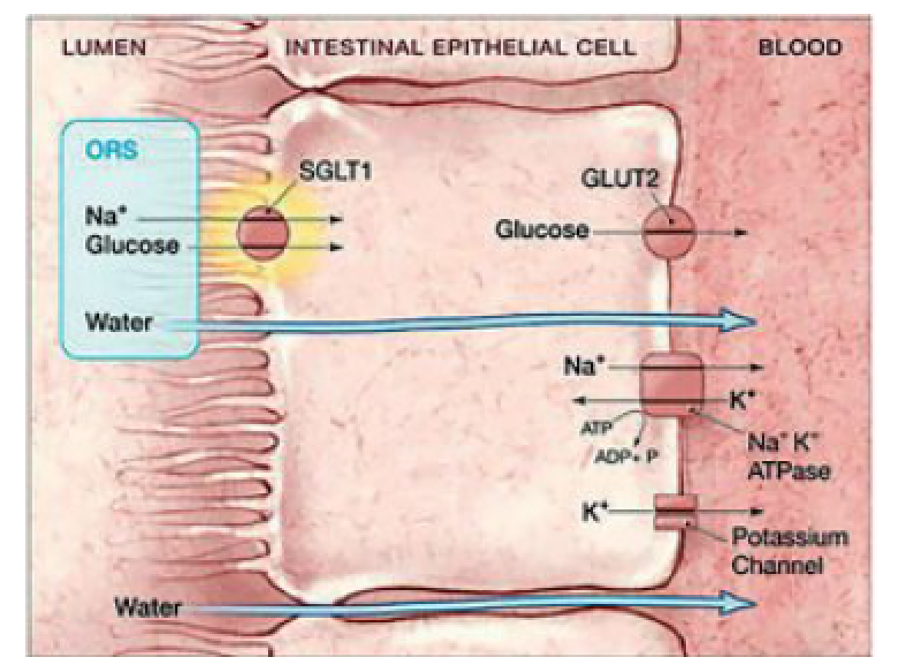
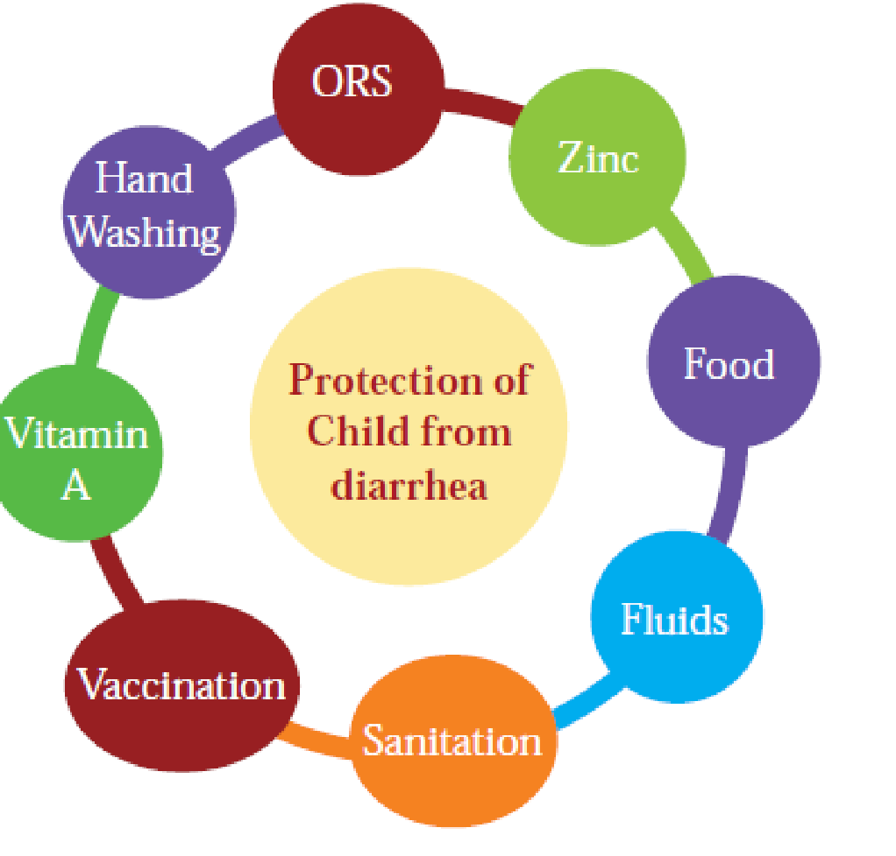
Through the process of osmosis, the salts and sugars pull water into your bloodstream and speed up rehydration.
Acidity is a set of symptoms caused by excess production of acid by the gastric glands of the stomach. Your stomach naturally produces gastric or hydrochloric acid within bracket H Cl to help digest and break down food. Acidity issues arise when there is excess production of this acid due to triggers such as acidic foods, spicy food, alcohol, dehydration and stress. When acidity occurs, the excess acid may move up from your stomach to your esophagus.
The lining of your stomach with a pH of 1 to 3 is designed as such to withstand a high acidic environment.
When we have acidity or heartburn, we are administered a class of medicines known as antacids. They are actually weak bases. As learned in chemistry, when a base is mixed with an acid a neutralization reaction occurs. When antacids are consumed, it creates a chemical reaction in the stomach lowering the acidity and makes the digestive acids less corrosive and damaging.
Most of the common antacids are Sodium Bicarbonate, Calcium Carbonate, Magnesium Hydroxide, Magnesium Carbonate and Aluminum Hydroxide.
The chemical reaction created when Magnesium Hydroxide neutralizes HCI in the stomach and intestine.
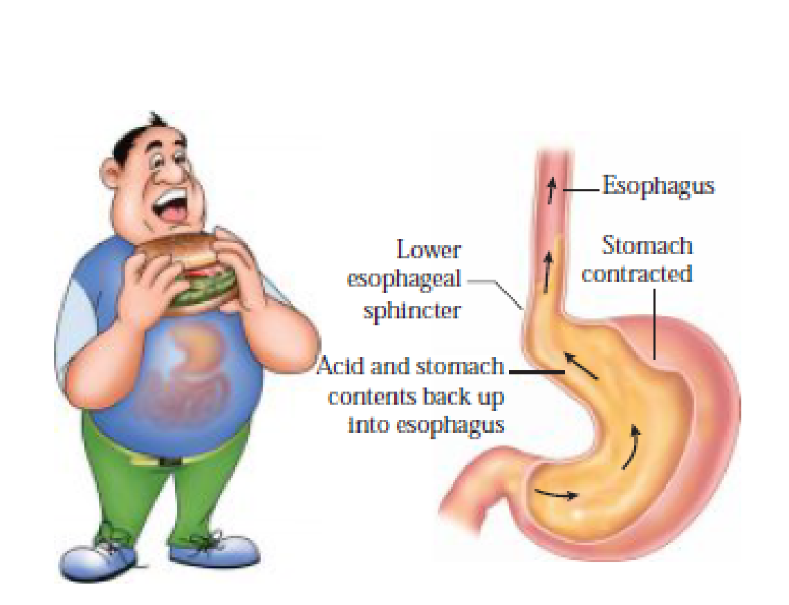
Ages ago, there was a time where even a small infected wound can cause death in human beings. The discovery of antibiotics changed all. Now armed with antibiotics, many deadly infectious diseases can be tackled, which once meant to cause serious illness and death.
The discovery of antibiotics was an accident, which happened in 1928 while a British bacteriologist, Dr. Alexander Fleming was involved in research on staphylococcus bacteria. This bacterium was meant to cause deadly diseases such as pneumonia, sour throat, etcetera. The discovery happened while he was culturing the bacteria on a nutrient agar media in a Petri dish. He went on a holiday carelessly leaving the dish in his laboratory table without cleaning and sterilization.
After several days, when he returned back, he observed the growth of mould within bracket kind of common fungus, which grows on stale bread or cheese. on a part of the Petri dish. He also observed that there was no bacterial growth surrounding the mould, which indicated that something in the mould had prevented the growth of bacteria in the culture medium. On further research, Fleming identified that the “mold juice” was capable of killing a wide variety of harmful bacteria, such as streptococcus, meningococcus and diphtheria bacillus.
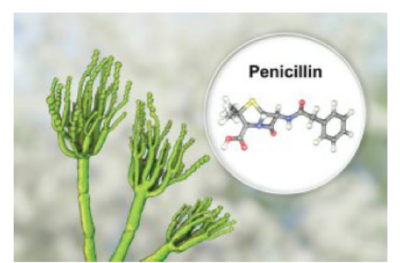
And that was how the world’s first antibiotic – penicillin – was discovered. Fleming named the mould penicillium notatum, from which the antibiotic penicillin was isolated. However, Fleming was not the first using moulds and other living microorganisms to treat infections. Thousands of years ago, the ancient Egyptians, had used mouldy bread to treat infected wounds. Similar practices were observed among ancient Greeks, Serbians and even among Indians. While these were perhaps partially effective, their efficacy is nowhere near the modern antibiotics.
Naturally, many microorganisms and plants synthesize chemicals which are toxic in nature to protect them from invading organisms. The biosynthesized chemicals isolated from the plants or microorganisms and used as medicines against infectious diseases. These substances were called as antibiotics. Example: Chloramphenicol’s, tetracyclines, Penicillin derivatives, cephalosporins and their derivatives. Today, many infectious diseases in the world are rare due to the advancement in antibiotic research.
Box news
Do you know?
Antibiotics don’t work for viruses like cold and the flu.
However, the overuse of antibiotics makes it inactive or less effective. Antibiotic resistance is defined as the ability of the microorganisms to resist the effects of an antibiotic to which they were once sensitive. Thus, the antibiotics become less effective and we are forced to either consume a larger dose or shifting towards the use of other virulent variants of antibiotics. Thus, the research on antibiotics is of great importance to combat the virulent and mutated microorganisms.
Injury, burn, pressure from sharp objects and other conditions cause pain in our body. The unpleasant feeling may be a burning sensation in the tissue around the injury, throbbing headache or ache of arthritis. Back pain, neck pain, joint pain, headaches, pain from nerve damage, pain from an injury and pain related to diseases are some of the most common pains.
The unpleasant emotion of ‘pain’ is created in the brain and not at the spot of the injury. If the pain is severe, say from burn, the impulse sent to brain trigger immediate response.
Reacting to the signal from the brain, muscle pulls our hand from the fire. Reacting to the message received from the pain spot, the brain sends back messages that initiate healing process. It can trigger to release pain suppressing chemical and additional flow of additional white blood cells and platelets to help repair tissue at an injury site.
Analgesics or pain killers are the pain suppressing chemicals released by the body. They suppress the feeling of ‘pain’. These analgesics drug selectively relieves pain by acting either in with in bracket Central Nerves System. or on peripheral pain mechanism, without significantly altering consciousness.
When we are affected by fever, often we are administered Paracetamol. Paracetamol interact with the receptors and reduce the intensity of pain signals to the brain, also suppresses the release of substances, called prostaglandins that increase pain and body temperature.
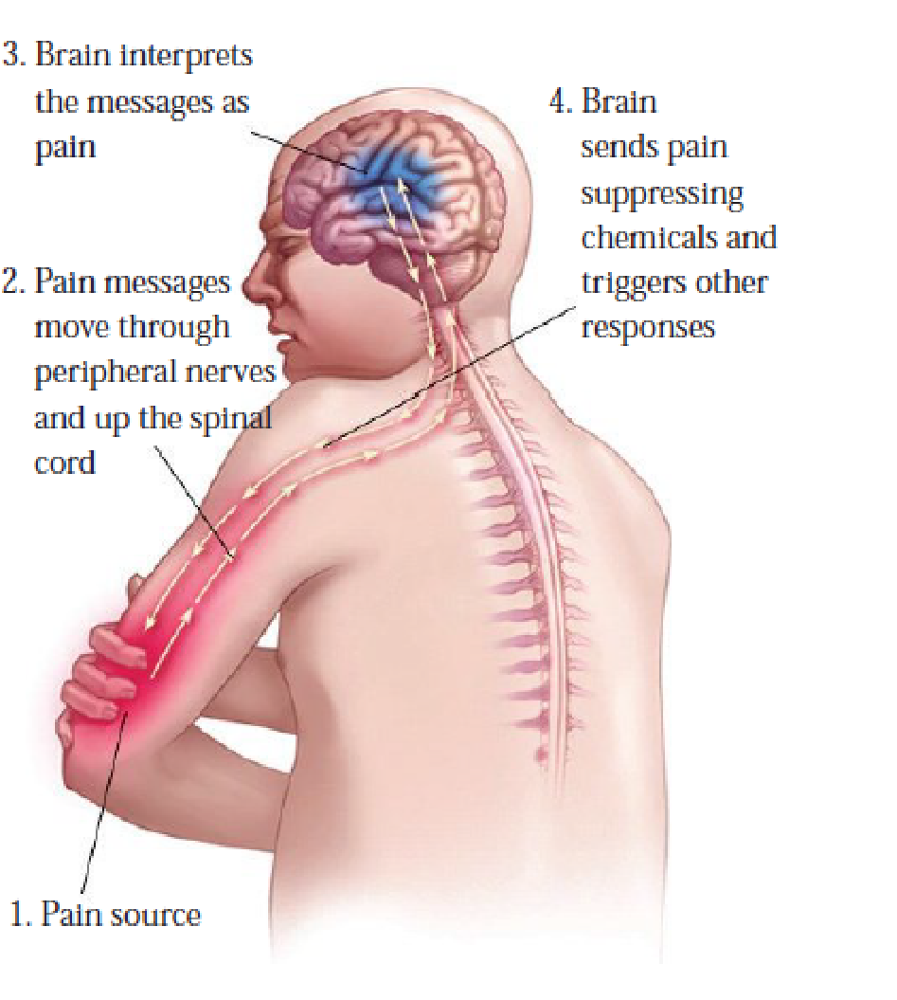
Box news
Do you know?
Anesthetics The first local anesthetic was cocaine was isolated from coca leaves by Albert Niemannin Germany, 1860
Traditional anti-inflammatory agents Peppermint, Catnip
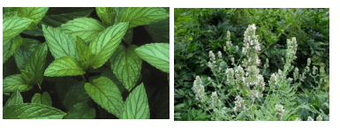
These are classified as follows,
1 Non-narcotic within bracket Non additive analgesics
Example Aspirin
2 Narcotic drugs Example codeine
4.5 Antipyretic In normal course our body temperature ranges from 98.4 to 98.6 degrees Fahrenheit.
When the temperature goes above this level it is called fever. Most common cause of fever is infection. Bacteria and virus cannot thrive above a certain temperature. To defend the invading virus and bacteria the immunity system increases the body temperature.
Once infection is sensed, the immune system releases a chemical called pyrogen. These pyrogens released into bloodstream reaches the hypothalamus, present at the basal part of the brain. The function of Hypothalamus is to control the body temperature. Sensing the pyrogens, hypothalamus increases the body temperature by releasing a chemical called prostaglandin.
Normally little fever is good as it helps to arrest the growth of infection. However, if the internal body temperature exceeds 105 degree Fahrenheit this may cause damage to our body protein and the brain may experience seizures and delirium. The prolonged high fever may also cause death.
Antipyretics within bracket anti against and pyretic Feverish are chemical substances that reduce fever. They suppress the release of prostaglandin and reduce fever. The most common and well known anti pyretic is paracetamol. Other antipyretics and anti-inflammatory agents include Aspirin, Ibuprofen, Diclofenac.
Antiseptics are substances applied to the exterior of a body that kill or inhibit microbes and infective agents. Antiseptics can be effective against one or a combination of bacteria, fungi, viruses or other microorganisms.
Box news
Do you know?
Mixture of chloroxylenol and terpinol
Iodine Plus 2 to 3 percent alcohol Water mixture Soap, Iodoform, phenolic solutions, ethanol, Boric acid are examples.
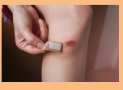
Natural antiseptics
1. Garlic,
2. Turmeric,
3. Aloe vera,
4. Onion,
5. radish
Difference between Antiseptic and Disinfectants as a table
Antiseptic |
Disinfectants |
1. All antiseptic are disinfectants. |
All disinfectants are not antiseptic |
2. It can be applied on the live tissues, |
It can be applying on in animate object, |
For example skin or Mucous |
For example- Surface, lab working tables, floor. |
Anti histamines are defined as drugs that combat the histamine in the body that are used for treating allergic reactions and cold symptoms. Histamine is a chemical messenger involved in number of complex biological reactions. When a foreign body such as pollens enters the body, the immune system believes those substances to be harmful and generates the release of histamine. When histamine is released, it will interact with the histamine receptors on the cell surface or within a target cell and cause changes in the bodily functions. This stimulates many smooth muscles to contract, such as gastrointestinal tract and bronchi. In certain smooth muscles, they cause relaxation of blood capillaries which increase the flow of lymph and its protein content and lead to the formation of edema within bracket redness and rashes.
Antihistamines or histamine receptor antagonists oppose selectively all the pharmacological effects of histamines. For Example, Diphenhydramine, chlorpheniramine, cimetidine. The adverse effects of antihistaminic are mouth dryness and sleepiness.
Medicine:
Medicines are used to treat the disease and to improve our health.
“Diagnose the disease and understand its seeds.
Identify the cause and make sure it succeeds”.
Medicine us the science or practice of the diagnosis, treatment, and prevention of disease. There are many ways to intake the medicine.
1. Oral use
2. External use
3. Injections within bracket Intra muscular or Intra venous.
The medicines we take treat our disease and lead us to a good health.
The above picture explains instructions to use medicines safely.
Always use medicines safely!
Combustion
Can you guess what is common in rusting or iron, burning coal and the flame of candle? They all undergo a chemical reaction known as combustion. Combustion is a chemical reaction that occurs in the presence of a fuel and an oxidizing agent that produces energy, usually in the form of heat and light.
What we call as ‘burning’ is really a combustion reaction. In fact, combustion is one of the first chemical reactions intentionally harnessed by humans. Any reaction that involves reaction with oxygen is called oxidation reaction. In the combustion of hydrocarbon with oxygen, typically carbon dioxide and water are produced.
C H4 Plus 2 O 2 gives CORBAN DIOXIDE Plus 2 H2 O Plus Heat energy
Hydrocarbon plus Oxygen gives Carbon dioxide plus Water
All combustion reactions are exothermic; that is, they release heat.
Ignition Temperature:
The minimum temperature at which a substance catches fire, and burns is called its ignition temperature.
A substance will not catch fire and burn if its temperature is lower than its ignition temperature. Different substances have different ignition temperatures.
Substances which have very low ignition temperature and can easily catch fire with a flame are called inflammable substances. Example.
Petrol. Alcohol, LPG within bracket Liquefied Petroleum Gas, CNG within bracket Compressed Natural Gas. etcetera.
Flame
Flame is actually a chemical reaction. To be specific, the flame is a mixture of gases within bracket vaporized fuel, oxygen, carbon dioxide, carbon monoxide, water vapor, and many volatile materials. and so is matter. The light and heat produced by the flame is energy, not matter. But fire is a matter.
Flame and its structure
Box news
Fact
Chemical Reaction in Ignition
Oxygen Plus Heat Plus Fuel gives Fire
Which is the festival of light? What is the speciality of that festival? Yes. We will light more lamps to decorate the houses. Wont we? Now how do the lights glow? Yes, with flame.
Here is an experiment with colorful flame
White flame indicates presence of Epsom salt within bracket Mg SO4
Violet flame indicates presence of Lithium Chloride
Indigo flame indicates the presence of Potassium Chloride
Blue flame indicates the presence of Bleaching powder
Green flame indicates the presence of Borax powder
Yellow flame indicates the presence of Calcium chloride
Orange flame indicates the presence of Table salt
Red flame indicates the presence of Strontium chloride
Flame:
Flame is a zone of combustions of a combustible substance. Substances which vaporize during burning produce flames.
Example Wax, Kerosene etcetera
Substances which do not vaporize during burning do not produce flames. Example. coal
Structure of a Candle flame A candle flame has three main zones, they are
1. The outer zone complete combustion of the fuel takes place and the color of the flame is blue and is the hottest part of the flame. It is the non-luminous part of the flame.
2. The middle zone partial combustions of the fuel takes place and the color of the flame
is yellow and is moderately hot part of the flame. It is the luminous part of the flame.
3. The inner zone There are unburnt vapors of the fuel and the color is black and is least hot part.
Finger inside the same
Why is the candle same straight?
Box message
Do you know?
A candle flame is caused by vapour burning above the candle. This burning vapour is hotter than the surrounding air and is therefore less dense. So, by the principle of convection, it “rises” so the flame is always upwards
Calorific value of different fuels
Fuel |
Calorific Value within bracket kilo joule or kilo gram |
Fuel Cow dung cake |
Calorific Value within bracket kilo Joule or kilo gram 6000 to 8000 |
Fuel Wood |
Calorific Value within bracket kilo Joule or kilo gram 17000 to 22000 |
Fuel Coal |
Calorific Value within bracket kilo Joule or kilo gram 25000 to 33000 |
Fuel Petrol |
Calorific Value within bracket kilo Joule or kilo gram 45000 |
Fuel Kerosene |
Calorific Value within bracket kilo Joule or kilo gram 45000 |
Fuel Diesel |
Calorific Value within bracket kilo Joule or kilo gram 4 lakhs and 50000 |
Fuel Methane |
Calorific Value within bracket kilo Joule or kilo gram 5 Lakhs |
Fuel C N G |
Calorific Value within bracket kilo Joule or kilo gram 50000 |
Fuel L P G |
Calorific Value within bracket kilo Joule or kilo gram 55000 |
Fuel Biogas |
Calorific Value within bracket kilo Joule or kilo gram 35000 to 40000 |
Fuel Hydrogen |
Calorific Value within bracket kilo Joule or kilo gram 1 lakhs and 50000 |
The amount of heat energy produced on complete combustion of 1kg of fuel is called its calorific value. The calorific value of a fuel is expressed in a unit called kilo joule per kg (kJ or kg)
Calorific value equal to Heat produced or Amount of fuel used for burning in kJ or kg.
If 4.5kg of fuel is completely burnt and the amount of heat produced stands measured at 1 lakh and 80,000 kJ what is its calorific value. Calorific value equal to 1 lakh and 80,000 or 4.5 equal to 40,000 Kilo Jule by Kilo gram
Types of combustion-
There are three main types of combustion. They are,
1. Rapid combustion:
It is a combustion process in which a substance burns rapidly and produces heat and light with the help of external heat. Example. Burning of LPG.
2. Spontaneous combustion: It is a process in which a light without the help of external heat. example. Phosphorus burns spontaneously at room temperature.
3. Explosion: It is a type of combustion in which a substance burns suddenly and produces heat, light and sound with the help of heat or pressure. Example. Explosion of crackers
CORBAN MONOXIDE Leads to respiratory problem
CORBAN DIOXIDE is responsible for Global warming
S O2 or N O2 are responsible for Acid Rain
More environmental impacts
Remedies
What happens when you add with these chemicals?
Sugar Plus Potassium permanganate Plus Glycerin.
Characteristics of good fuel
Slow combustion:
Slow combustion is a form of combustion which takes place at low temperatures. Respiration is an example of slow combustion.
The fire triangle
Experiment: Q R code videos
Make your own fire extinguisher
The conditions necessary for producing fire are,
1. Fuel
2. Air within bracket to supply oxygen
3. Heat within bracket to raise the temperature of the fuel beyond its ignition temperature
Fire can be controlled by removing any one or more of these conditions.
Fire extinguisher:
A fire extinguisher cut off the supply of Air or bring down the temperature of the fuel or both and controls the fire.
Portable fire extinguishers apply an extinguishing agent that will either cool burning fuel, displace or remove oxygen, or stop the chemical reaction so fire cannot continue to burn. When the candle of an extinguisher is compressed, it opens and inner canister of high-pressure gases forces the extinguishing agent from the main cylinder through a siphon tube and out the nozzle. A fire extinguisher works much like a can of hair spray.
Types of fire extinguisher:
The most common types of fire extinguishers are,
1. Air pressurized water extinguishers,
2. Carbon-di-oxide extinguishers.
3. Dry chemical powder extinguishers
The different types of extinguisher tackle different types of fire
Type |
Class A Combustible materials example paper and wood |
Class B Flammable Liquids example paint and petrol |
Class C Flammable Gases example. butane and methane |
Class D Flammable metals example. lithium and potassium |
Electrical
Electrical Equipment example. computer and generators |
Class F Deep fat fryers example. chip pans |
Comments |
Water |
Class A Combustible materials. It will work . |
Class B Flammable Liquids. It won’t work . |
Class C Flammable Gases. It won’t work. |
Class D Flammable Metals. It won’t work |
Electrical Equipment. It won’t work |
Class F Deep fat fryers. It won’t work |
Do not use on liquid or electric fires |
Foam |
Class A Combustible materials. It will work |
Class B Flammable Liquids.It will work |
Class C Flammable Gases. It won’t work |
Class D Flammable Metals. It won’t work |
Electrical Equipment. It won’t work |
Class F Deep fat fryers. It won’t work |
Not suited to domestic use
|
Dry powder |
Class A Combustible materials.It will work |
Class B Flammable Liquids. It will work |
Class C Flammable Gases. It will work |
Class D Flammable Metals. It will work |
Electrical Equipment. It will work |
Class F Deep fat fryers. It won’t work |
Can be used safely up to 1000 volts
|
corban dioxide |
Class A Combustible materials. It won’t work |
Class B Flammable Liquids. It will work |
Class C Flammable Gases. It won’t work |
Class D Flammable Metals. It won’t work |
Electrical Equipment. It will work |
Class F Deep fat fryers. It won’t work |
Safe on both high and low voltage
|
Wet chemial |
Class A Combustible materials. It will work |
Class B Flammable Liquids. It won’t work |
Class C Flammable Gases. It won’t work |
Class D Flammable Metals It won’t work |
Electrical Equipment. It won’t work |
Class F Deep fat fryers. It will work |
Use on extremely high temperatures
|
Fire extinguishers can be broadly classified into five types:
1. Water
2. Foam
3. Dry Powder
4. CORBAN DIOXIDE
5. Wet Chemical.
The classes of fire. There are five classes of fire: Class B, Class A, Class C, Class D, and Class E.
Class A fires |
Combustible materials: caused by flammable solids, such as wood, paper, and fabric. |
Class B fires |
Flammable liquids: such as petrol, turpentine or paint |
Class C fires |
Flammable gases: like hydrogen, butane or methane |
Class D fires |
Combustible metals: chemicals such as magnesium, aluminum or potassium |
Class E fires |
Typically a chip-pan fire |
Electrical fires |
Electrical equipment: once the electrical item is removed, the fire changes class |
both and controls the fire.
1 Choose the correct answers
1. A drug effective in the treatment of pneumonia, and bronchitis, is DASH
a. Streptomycin
b. Chloramphenicol
c. Penicillin
d. Sulphaguanidine
ANSWER: c Penicillin
2. Aspirin is DASH
a. Antibiotic
b. Antipyretic
c. Sedative
d. Psychedelic
ANSWER: b. Antipyretic
3. DASH are that neutralize stomach acid.
a. Antacid
b. Antipyretic
c. Analgesic
d. Antihistaminic
ANSWER: a. Antacid
4. The lowest temperature at which a substance catches the fire is called its DASH
a. Boiling point
b. Melting point
c. Critical temperature
d. Ignition temperature.
ANSWER: d. Ignition temperature.
5. Which is the hottest part in the flame of candle DASH
a. Blue
b. Yellow
c. Black
c. Way part
ANSWER: a. Blue
2. Fill in the blanks.
1. Penicillin was first discovered by DASH
ANSWER: ALEXANDER FLEMING
2. World O R S Day is DASH
ANSWER: JULY 29
ANSWER: OXIDIZING AGENT
ANSWER: NOT REACHED
5. Fire produced by oil cannot be controlled by DASH
ANSWER: WATER
3. True or False If False give the correct answer
1. Antibiotics does work for viruses like cold and Flu.
ANSWER: FALSE
Correct statement: Antibiotics does not work for viruses like cold and flu
2. Analgesics are the substances that lower the temperature during fever. ANSWER: False
Correct statement: Antipyretic are the substances that lower the temperature during fever.
3. All fuels form flame. ANSWER False Correct statement: All fuels do not form flame.
4. Oxygen is necessary for combustion ANSWER: TRUE
5. Burning wood and coal causes pollution of air. ANSWER: TRUE
4. Match the following questions
1. Antipyretic |
reduce pain |
2. Analgesic |
reduce body temperature |
3. Antacid |
spontaneous combustion |
4. Phosphorus |
O R S Solution |
5. Carbon di oxide |
leads to respiratory problem. |
ANSWER:
1. Antipyretic |
Reduce body temperature |
2. Analgesic |
Reduce pain |
3. Antacid |
O R S Solution |
4. Phosphorus |
Spontaneous combustion |
5. Carbon di oxide |
Leads to respiratory problem. |
5. Analogy
1. Inner zone of flame: DASH, outer zone of flame: DASH
ANSWER Black, Blue
2. Tincture: DASH, histamine: DASH.
ANSWER Antiseptic, Chemical messenger
6. Very short answer
1. First viral disease detected in human being was: DASH within bracket Yellow fever or dengue fever
2. DASH, DASH, DASH are called greenhouse gases within bracket Fleming or lenis pastor
3. Name a substance which can be used as an antiseptic as well as disinfectant?
4. What are the main constituents of Dettol?
5. Name the unit in which the calorific value of a fuel is expressed?
6. How many types of combustion are there?
7. What are the essential requirements for producing fire?
7. Short Answer Questions
1. Why should not medicines be taken without consulting doctors?
2. Why do antiseptics differ from disinfectants? Give one example of each.
3. What is ignition temperature?
4. If 4.5 kilogram of fuel is completely burnt and amount of heat produced stands measured at 1,80,000 KJ what is the calorific value.
8. Answer in Detail
1. Explain briefly about antibiotic and analgesic?
2. Make labeled diagram of a candle flame
9. Picture based question
Arul and Aakash were doing an experiment in which water was to be heated in a beaker. Arul kept the beaker near the wick in the yellow part of candle flame. Aakash kept the beaker in the outer most part to the flame. Whose water will get heated in a shorter time?
Websites: http://memorize.com/medical-terminologyprefixe
I C T CORNER
CHEMISTRY IN DAILY LIFE
Explore the activity to know about Flame test.
PROCEDURE:
Step 1: Use the URL or scan the QR code to open the activity page.
Step 2: Use the platinum wire to scoop up chemicals, and then put them in the flame to see how each chemical changes the flame's colour.
Step 3: Press the space bar to select the new chemical.
Chemistry in daily life URL:
https://scratch.mit.edu/projects/138778000
Unit 5
To know animals are used as food and for making clothes
To know how wool and silk is produced
To understand the hazards of silk and wool industries and learn how to avoid it
To gain knowledge about AHIMSA or Peace silk
To understand the importance of Animal protection and their maintenance
In earlier class you have studied how plants are used in our daily life. Now you are going to learn how animals are useful in our daily life. Animals are closely associated with human beings in their daily life. They are the greatest gift of nature. They are of great economic importance to our nation. Animals contribute many things for our use, as food, clothing and transportation. Let us learn the importance of animals and how to protect and maintain them.
Milk
Milk is white liquid food produced by the mammary glands of mammals. It is the primary source of nutrition for infant mammals. We use milk in our daily life for the following.
Milk is the daily essential product which is obtained from animals like cows, buffalos’ goats and camels.
Milk is necessary in our daily diet to prepare tea, coffee, ice creams, chocolates, sweets and other related products.
Highly recommended nutritive food containing protein and calcium are made from milk like, Paneer, Cheese, Cream, Butter, Ghee and curd.
Some of the food items are given below. Find out their ingredients and sources.
serial number |
FoodItems. Examples of food items given below in image food item |
Ingredients |
Sources |
Serialnumber 1 |
Ingredient Chicken |
Sources Animals |
|
Ingredient Spices |
Sources dash |
||
Ingredient Oil or Ghee |
Sources Plants or Animals |
||
Ingredient Curry leaves |
Sources dash |
||
Ingredient Coriander leaves |
Sources: dash |
||
serialnumber 2 |
ingredient fish |
Sources: dash |
|
ingredient spices |
Sources: dash |
||
ingredient oil or ghee |
Sources: dash |
||
ingredient lemon |
Sources: dash |
||
serialnumber 3 |
ingredient milk |
Sources: dash |
|
Ingredient tealeaf or coffee nut |
Sources: dash |
||
ingredient water |
Sources: dash |
||
ingredient sugar |
Sources: dash |
||
serialnumber 4 |
ingredient oil or ghee |
Sources: dash |
|
ingredient sugar |
Sources: dash |
||
ingredient milk |
Sources: dash |
||
ingredient nuts |
Sources: dash |
||
ingredient flavour |
Sources: dash |
||
ingredient honey |
Sources: dash |
||
serialnumber 5 |
ingredient rice |
Sources: dash |
|
ingredient egg |
Sources: dash |
||
ingredient spices |
Sources: dash |
||
ingredient egg |
Sources: dash |
||
ingredient spices |
Sources: dash |
||
ingredient oil |
Sources: dash |
||
Ingredient coriander leaves |
Sources: dash |
Eggs
Eggs are laid by female birds of many different species to produce their young ones like hen, duck, turkey and ostrich. We use these in our daily life for the following. They are used in our daily diet to get energy and good health. It is highly nutritious and rich in protein. Eggs have 6 grams of high-quality protein. A protein packed breakfast helps to sustain mental and physical energy throughout the day. Consuming egg daily is good for any age people.
BOX ITEMS
Can you distinguish a fresh egg from a rotten one?
1. Take a bowl of water.
2. Put the egg in the bowl.
3. Observe now, the fresh egg will sink. But the rotten egg will float.
BOX ITEMS
DO YOU KNOW?
Honey
Where from honey comes?
How is it produced? Have you seen a beehive where many bees are seen buzzing about?
Bees collect nectar within bracket sweet juices. from flowers, convert it into honey and store in their
honey comb.
Honey is a sweet liquid produced by honey bees from the nectar of flowers. It is extracted from beehives by us.
Raw organic wild honey is extracted from selected hives by tribal honey hunters, who collect it from jungles.
Honey has more medicinal values and highly nutritious food.
BOX ITEMS
Aim: To find out the purity of honey.
Materials required: Water and honey.
Procedure: Take a glass of water, add a drop of honey to it. Observe carefully.
Inference: If the drop of honey reaches the bottom without dissolving, then the honey is pure. If the drop of honey dissolves before reaching the bottom, then the honey is impure.
BOX ITEMS
DO YOU KNOW?
The worker bees collect the nectar from the flowers. They nourish the young ones and repair the bee hive and also protect it.
Meat: Meat is animal flesh that is eaten as food. Most often it is used to describe skeletal muscle and fat that is found with it. Some people eat the flesh of animals such as chicken, sheep, rabbit, pig, goat, camel, buffalo (beef), fish, crab, prawn, lobster and many more.
1. Animal meat is considered as the part of diet by most of the people.
2. Meat consumption is considered essential for its nutritive values. Especially chicken breeding is done in large scale in the form of poultry farming for economic purpose.
Poultry Farming
Poultry farming is the process of raising domesticated birds such as chicken, duck, turkey and geese for the purpose of getting meat and egg for food. Poultries are reared in large numbers and chickens being the most common one. Chickens are broadly of two types.
1. Layers within bracket egg laying chickens
2. Broilers within bracket one’s that are reared for meat
Poultry farming requires safe and sufficient space within bracket wired gages for the birds. Plenty of water, proper ventilation and regular feed that is rich in proteins, fats and vitamins. Poultry feed is comprised of maize, wheat, millet and rice bran in mashed form and ground nut cakes.
Diseases- Poultry birds suffer from various diseases caused by some microbes. It is important to keep their shelters clean and get the birds vaccinated against common diseases. Some of the common diseases of poultry birds are the following.
Salmonellosis Within bracket diarrhea |
Caused by bacteria |
Rainhat disease, Within bracket Fowl pox |
Caused by virus |
Aspergilleses |
Caused by fungus |
Animal hair has a great demand. The hair from goat and sheep is used for manufacturing woolen clothes, shawls and blankets, mufflers and socks. Similarly, horsehair is used as bristles in small painting brushes. Even fur of animals including the skin is used to make warm and modern style clothes.
Animal Fibers
Some fabric fibers such as cotton, jute, silk is called natural fibers. Cotton and jute are examples of plant fibers. Wool and silk fibers are examples of animal fibers. Wool is obtained from the fleece of sheep or goat. It is also obtained from the hair of rabbit, yak and camel. Silk fiber is obtained from the cocoon of silkworm.
Wool
What type of clothes are being used by people of snow capped region?
Why such kind of clothing is preferred by them?
Wool is the fiber derived from the fur of animals of the Caprine family principally sheep. The hair of other mammals like goat, yak, alpaca and rabbit may also be called wool. Mostly, wool is produced from the outer coat of sheep. The processing of wool involves five major steps. They are as follows Shearing, Grading or Sorting, washing or Scouting, Carding and Spinning.
Shearing: The flesh of the sheep is removed from its body. This is called shearing.
Grading or Sorting: The fleece from the same sheep may be different from different parts of the body. It is sorted out into separate piles of similar nature. This is known as Grading (or) Sorting.
Washing or Scouting: The sheared skin is washed thoroughly with soap (or) detergents to remove dirt, dust and grease.
Carding: The dried wool is carefully removed. These fibers then passed through the rollers which are covered with fine sheet of thin wire teeth. This process arranges the wool into a flat sheet called a web.
Spinning: The web is drawn into narrow strand and then passed through spinning machines. The spinning machines twist the strands into yarn. The yarn is wound to form balls of wool. This yarn is either weaved into fabric or retained for knitting.
Characteristic features of wool
It is resistant to heat, water, wear and tear.
It absorbs moisture.
Wool insulates against cold. So wool is a good insulator.
It does not wrinkle easily.
Uses of wool
Wool is a multifunctional fiber with a range of diameters that makes it suitable for clothing, household fabrics and technical textiles. Two third of wool is used in the manufacture of garments including sweaters, dresses, coats and active sportswear. Blended with other natural (or) synthetic fibers wool used as adds drape and crease resistance blankets, anti-static and noise absorbing carpets.
Silk
Have you ever attended marriage functions?
What type of dresses the bride and bridegroom wear?
What is it made up of?
Silk is the secretions of the silk moth. Silk is obtained from the cocoon of silk worms, which feed on the mulberry leaves. Silk worms live for a very short time, only about two months. During this period, they pass through four stages of development. They are eggs, caterpillars, cocoon and adult moth. These stages are called as life cycle of a silk worm.
The cultivation and production of silk is known as Sericulture. An adult female silk moth lays about 500 eggs. The eggs are then kept in cold storage for six weeks. The eggs are placed in the incubator. After about ten days, the eggs hatch out and the larvae spend the next 35 days eating mulberry leaves.
![IMAGE : THE GIVEN PICTURE EXPLAINATION OF THE LIFE CYCLE OF SILKWORM AND THE PROCESS OF SILK PRODUCTION IS GIVEN. THE FOLLOWING NINE STEPS ARE EXPLAIN IN DETAILS. 1. Which came first the silkworm or the egg. 2. The eggs hatches as a tiny larva. 3. The silkworm eat 50,000 times its initial weight if mulberry leaves and grows. 4. The silkworm spin a cocoons around itself. 5. Inside the cocoon the caterpillar changes into a pupa. 6. cocoons are boiled or steamed to kill the pupa and loosen the sericin that holds the cocoons. 7. Individual filaments are and unraveled. 8. Spun into thread. 9. Thread is woven into a fabric.](images/image-159.png)
The silk worms spend about five days producing silk and spinning its cocoon of a single long thread. The cocoons are boiled to make it easier to unwind the silk and kill the pupae inside. If the silk moths were allowed to hatch, the long silk fibers will get turned by the hatching of moth. Cocoons are unwinding and then the individual silk filament is reeled together to form a thread large enough for weaving. The silk thread is cleaned, dyed, woven into fabric.
Characteristic features of Silk
It is very soft, comfortable and versatile
It can be easily dyed.
It is the strongest natural fiber.
It has poor resistance to sunlight exposure.
Uses of Silk
Silk has natural beauty and elegance. It gives comfort in warm weather and warmth during colder months. It is used in the manufacture of classical and high fashion clothes, modern dresses particularly silk sarees, the elegant of beautiful dresses. It is also used in household for making wall hangings, curtains, rugs and carpets. It is also being used in the manufacture of surgical threads for sutures.
BOX ITEMS
DO YOU KNOW?
India is the world’s second largest silk producing country. Kancheepuram, Thirubhuvanam and Arani are famous places for silk production in Tamil Nadu.
5.3 Hazards in Silk and Wool Industry- Hazard is any industry has the potential to cause injury, ill health or damage to human being and their property or the environment.
Hazards in Silk Industry
Generally, the workers in silk industry affected with arthritis is they stand for a long time reeling the silk into yarn. They also develop back pain and visionary problem and skin injuries. Some time they may suffer from respiratory problem like asthma and bronchitis due to poor ventilated area of their work.
Similarly, hazards in wool industry the workers are exposed to various chemicals and detergents which causes allergies of the skin. They also get infected to anthrax bacterium which leads to fatal dead disease called the sorters disease.
Anthrax is caused by Bacillus anthracis by handling contaminated animal hair and contact with the live stock during hair processing.
The symptoms are fever, cough and shortness of breath, similar to typical pneumonia.
Sometimes it may lead to nausea, vomiting and diarrhea.
Treatment
Penicillin or Ciprofloxacin is given as the best medicine for treatment of anthrax.
The spread of the disease is controlled by vaccination of animals and by burning or burial of infected animal’s carcasses.
It is the duty of the employer to take care of the industrial workers by providing hygienic and well-ventilated workplace.
Sericulture and Ahimsa silk within bracket Peace silk Sericulture or silk farming is the cultivation of silkworm to produce silk. It is the rearing of silkworms to obtain silk.
Ahimsa silk
It is also known as Peace silk. In 1992, Kusuma Rajaiah, a Government officer from Andhra Pradesh state of India proposed ahimsa way of silk production for the making silks without killing the silkworm. It involves a humane method specifically letting the worms to hatch and then using the vacant cocoons. Traditional silk manufacturing methods involve boiling the cocoons of the silk worms and then sorting out the threads, which is used later in silk production. It has been supported by many people who are interested in the welfare of animals.
![PICTURE : EXPLAIN THE CONCEPT OF Animal protection and maintenance. The above pictures explain the following concepts 1. Animals used as food: An animal raises for its ¬Flesh and products are consumed by human is called animal food. Example: Prawn, Crab, Paneer and cheese, Crab, Fish 2. Animals used as Cloth: Animals skin is used for making woolen dresses and some leather goods. Example: Leather bag 3. Types of Wool: Alpaca, Fiber, Moheir, Cashmere and Lamb’s Wool. 4. Types of Silk: Eri Silk, Muga and Spider Silk. 5. Ahimsa Silk Ahimsa means non-violence. It is used to describe this innovation because the fabric is manufactured in a process where Silkworms are not killed. 6. Poultry Farming : Poultry farming domestically or commercially primarily for meat, eggs and also for feathers. 7. Animal protection and maintenance](images/image-161.png)
Protecting animals is like protecting our own children or parent. They are living things similar to human beings. As an elite, most intelligent and responsible human being on the planet, it is our duty to protect all the living organisms on earth. The human tendency and conscience towards the animals should be considerate to protect and safeguard the animals, hence as human it becomes a great responsibility and obligatory to protect the animals.
BOX ITEM
DO YOU KNOW?
Study of breeding of animals and their maintenance is called animal husbandary.
The Ministry of Environment, Forest and Climate change has released four New Gazette Notifications under the Prevention of Cruelty to Animals Act 1960 to regulate dog breeders, animal marketers, aquarium and pet fish owners. This progress has come about as a joint effort by animal protection groups. With the protection of animals, we actually protect ourselves and protect the environment. So, we have to love and protect the animals and treat them as our family members.
1. Choose the correct answers
1. DASH is the daily essential product which is obtained from cattle.
a) Egg
b) Milk
c) Both of them
d) None of them
answer: b Milk
2. Eggs are rich in DASH
a) Protein
b) Carbohydrate
c) Fat
d) Acid
answer: a) Protein
3. Which parts of the goat and sheep is used for manufacturing clothes.
a) Leg
b) Hand
c) fur
d) Head
answer: c) fur
4. The cultivation and production of silk is Known as DASH
a) Horticulture
b) Floriculture
c) Agriculture
d) Sericulture
answer: d) Sericulture
5. Sorter’s Disease is otherwise known as DASH
a) Asthma
b) Anthrax
c) Typhoid
d) Cholera
answer: b) Anthrax
2. Fill in the blanks.
1. Proteins and DASH is rich in milk.
answer: calcium
2. DASH is extracted from bee hives.
answer: honey
3. Anthrax is caused by DASH.
answer: bacillus anthracis
4. DASH is the strongest natural fiber.
answer: silk
5. Peace silk was produced in the year DASH.
answer: 1992
3. True or False If False give the correct answer
1. Animals are the greatest gift of nature.
answer: true
2. Horse hair is used as bristles in small painting brushes.
answer: true
3. Wool is the fibre derived from the silk worm.
answer: false
Correct statement: SilK is the fibre derived from the silk worm.
4. Ahimsa silk is otherwise known as Mulberry silk. answer: false Correct statement: Ahimsa silk is otherwise known as peace silk.
5. Penicillin is the best medicine for curing Anthrax. answer: true
4. Match the following
1. Cocoons |
|
Meat |
2. Peace silk |
|
Poultry |
3. Broilers |
|
Silk worm |
4. Sweet Liquid |
|
Andhra Pradesh |
5. Goat |
|
Honey |
Answer:
1. Cocoons |
|
Silk worm |
2. Peace silk |
|
Andhra Pradesh |
3. Broilers |
|
Poultry |
4. Sweet Liquid |
|
Honey |
5. Goat |
|
Meat |
5. Very short answer
1. Write about any two dairy products.
2. What are the two types of fibers that are obtained from animals?
3. What is shearing?
4. Write the symptoms of Anthrax
5. Define – Sericulture
6. How should we treat animals?
7. Who invented the Ahimsa silk?
6. Short Answer Questions
1. What are the characteristics of wool? Give any three.
2. Write about any three uses of silk.
3. What are the common diseases that are found in Poultry?
7. Answer in Detail
1. Write about Ahimsa Silk.
2. Write about the hazards of silk industry.
3. What are the major steps involved in this wool factory.
4. Write the uses of the wool.
8. Higher order thinking skills
1. Silk fiber is used to manufacture parachute. Why?
2. Honey is recommended for all. Why? What is its significance
9. Assertion and Reasoning
1. Assertion: Wool is the fiber derived from the fur of animals.
Reason: Animals like goat, Yak, Alpaca and rabbit yields wool.
a. Both Assertion and reasoning is correct
b. Assertion is correct but reason in wrong
c. Assertion is wrong, but reason is correct
d. Assertion and Reason are incorrect
2. Assertion: Penicillin or ciprofloxacin
Reason: These medicines cures cow pox.
a. Assertion is correct Reason is wrong
b. Assertion is wrong reason is correct
c. Assertion is wrong reason is also wrong
d. Assertion is correct, and reason is correct.
ICT CORNER
This activity helps the students to know about the farming and how to do the milking
PROCEDURE :
Step 1: Type the URL link given below in the browser or scan the QR code. A page opens.
Press Play button.
Step 2: A farm scene will come. Come along with that a hand.
Step 3: According to the instruction of the hand sow crop for cow then feed the cow.
Step 4: Follow the instruction of the hand you will end up with milk.
Animals in daily life – cow farm and milking URL:
https://play.google.com/store/apps/details?id=com.playnfun.cowfarmday
Unit 6
After learning this lesson, the students will be able to
know how to create a document through the LibreOffice software
explore their creative thinking.
learn how to align and format the document.
In this chapter, the students will learn to use the software Libre Office
LibreOffice is a powerful and free office suite, used by millions of people around the world. It’s clean interface and feature-rich tools help you unleash your creativity and enhance your productivity. LibreOffice includes the following components.
Text Document
Writer within bracket word processor is a feature rich tool for creating letters, books, reports, newsletters, brochures, and other documents.
Calc within bracket spreadsheet
Calc has all of the advanced analysis, charting, and decision-making features expected from a high-end spreadsheet. It includes over 300 functions for financial, statistical and mathematical operations, among others.
Impress within bracket presentations
Impress provides all the common multimedia presentation tools, such as special effects, animation, and drawing tools.
Drawing within bracket vector graphics
Draw is a vector drawing tool that can produce everything from simple diagrams or flow charts to 3D artwork.
Base within bracket database
Base provides tools for day to day database work within a simple interface. It can create and edit forms, reports, queries, tables, views, and relations, so that managing a relational database is much the same as in other popular database applications.
Math within bracket formula editor
Math is the LibreOffice formula or equation editor. You can use it to create complex equations that include symbols or characters not available in standard font sets.
Text document
In this chapter, we will discuss about the word processing. You can use it to type letters, reports and other documents. This lesson introduces you to the Word window. You use the Word window to interact with Text Document.
Managing Documents
This section of the lesson explains how to open a new or existing document, save a document, renaming a document and closing an opened document. There are several ways to create a new document, open existing documents and save documents in Word.
Create a New Document
To create a new document, do any one of the following methods:
1. Click the New Document button on the menu bar.
2. Choose File gives to New command from the menu bar.
3. Press Control Plus N keys on the keyboard.
Open an Existing Document
To open an existing document, do any one of the following methods:
1. Click the Open File button on the menu bar.
2. Choose File gives to New command from the menu bar.
3. Press CTRL Plus N keys on the keyboard. Each of the above method will show the Open dialog box. Choose the file and click the Open button.
Save a New or Existing Document
To save a new or existing document that is opened, follow any one of the following methods:
1. Click the Save button on the menu bar.
2. Select File gives to Save commands from the menu bar.
3. Press CTRL Plus S keys on the keyboard.
If the document is already named and saved earlier, it will simply save the document. On the other hand, if the file is a new document then it will prompt you by opening ‘Save As’ dialog box. Select the folder where you want to place your document. Type the name of the document in File Name and then click OK. You can also save a document by choosing File gives to Save As commands on the menu bar.
Close the Document
Close the current document by selecting File gives to Close command on the menu bar or click the Close icon if it is visible on the Standard toolbar.
Printing a Document
To print a document or selected pages follow the steps given below:
1. Open the document to be printed.
2. Choose File gives to Print command on the menu bar.
The Print dialog box will open. Select the Options like print range, Number of copies, Printer
name etcetera. See that printer is switched on and the paper is available in the printer tray.
3. Click OK.
Print Preview
Print preview provides a way to see how your document will look when printed. You can see several pages at once. It is similar to Print Layout View. An advantage of Print preview is that it has its own toolbar. The toolbar allows you to easily view multiple pages and change the magnification of the screen. You can also edit your document in print preview mode. To switch to print preview, use one of these methods:
1. Click on the Print preview in the file menu. Or Press Control Plus Shift Plus O keys.
EXIT TEXT DOCUMENT
When finished you can close all the files and quite the Word program by selecting File gives to Exit
command on the File menu bar.
Selecting Text
Even though the document is built up by typing one character at a time, while editing and formatting one always work with words, lines, paragraphs and sometimes with the whole document. For this purpose, one should learn how to select the text. Once the text is selected, change can be made to that text. The text can be moved, copied and made as bold. The font and color of the text can also be changed. For selecting text, the mouse or the keyboard can be used.
Selecting Text with Mouse
Following steps are to be followed:
1. Insertion point is moved to the start of the text to be selected.
2. The left mouse button should be clicked, held down and dragged across the text to be selected.
3. When the intended text is selected, the mouse button should be released.
Selecting Text with Keyboard
Following are the steps to be followed:
1. Insertion point is moved to the start of the text to be selected.
2. The Shift key is pressed down and the movement keys are used to highlight the required text.
3. When the Shift key is released, the text is selected.
Cut and Copy
The main difference between Cut and Copy is that cut removes the selected data from its original position while copy creates a duplicate of the original content.
Moving the Text
The selected text can be easily cut and pasted in the required location. Following steps are to be followed.
1. The text to be moved to a new location is selected.
2. Edit gives to Cut is selected or in the tool bar is selected to cut the selected text.
3. Insertion point is moved to the place where the text is to be pasted.
4. Edit gives to Paste is selected or in the tool bar is selected to paste the text in the new location. The text can also be pasted in this way to another or another type of document.
The following keyboard shortcuts can be used to move text.
Control plus X gives to Cut
Control plus V gives to Paste
Copying the Text
1. The text to be copied is selected.
2. Edit gives to Copy is selected or is clicked.
3. The insertion point is selected where the copy of the text should appear and is clicked.
The following keyboard shortcuts can also be used for copy and paste:
Control plus C gives to Copy
Control plus V gives to Paste
Formatting Options
Almost all the formatting options are available under Format menu. LibreOffice Writer also conveniently provides buttons for the most commonly used options. But before these options can be used, the text on which they are to be used has to be selected. Once the desired portion of the text is selected then depending on the need any one of the following buttons are clicked:
Click B to make text Bold.
Click I to make text Italic.
Click U to make text Underlined.
The same can also be achieved by clicking on format gives to character
Alternatively Control Plus B, and Control Plus U keys can be used to make the selected text bold, italic and underlined respectively.
Changing the Fonts
A font is a set of characters and numbers in a certain style. Each font looks different from other fonts.
Click the down arrow in the Fonts Combo box of font tab in Character dialog box.
Use Format gives to Character to open the Character dialog box.
From the list of available fonts, click the required one.
The text changes to the selected font
Font Size
The size of the text is also important. The same size of the text cannot be used for a legal document, and an advertisement material. Click the down arrow in the Size combo box of Fonts tab in Character dialog box. The text changes to the selected font size.
Changing the Font Colour
A different color for selected text can be used. Color printers are becoming more and more popular. With the help of a color printer, some splash can be added to the documents by changing the color of text. To use a different text color, select the text and click the arrow in the Font Color icon. A color palette is displayed from which the required color can be selected.
Alternatively, select the text and click on the Font color icon, to apply the current color of the Font Color.
Paragraph Alignment
Paragraph alignment refers to the appearance of the left and right sides of the paragraph. By default, Word aligns paragraphs to the left. You can align paragraphs in Word so the right sides are symmetrical. This is called right alignment. You can also align them so you center the lines with even space on both sides. This is called center alignment. Finally, you can justify the alignment, which aligns both the left and right sides.
Four types of alignment can be selected, and the best way to make a change is to use the Formatting toolbar.
Following steps are used:
To change the alignment of one paragraph, first click within that paragraph. To change the alignment of several paragraphs, select the ones needing change.
Changing Page Orientation
Usually the length of a document will be more than the width. This orientation is called portrait. But in some of the documents the width will be more than the length. This type of orientation is called landscape. The default orientation is portrait.
To change the orientation or paper size, the following steps are used:
The Format Page option is clicked. Click the Page tab, if necessary.
Select the necessary paper format from the Format drop-down list in the Page. Format section. Or enter the values in the Width and Height spin boxes.
For changing the orientation Portrait or Landscape radio buttons are used.
Changing Margins Using Rulers
If the user is not having the exact value for the margins then the Ruler option on the View menu can be used to change the margins.
Following steps are used in this method:
If the ruler is not displayed in the screen, View gives to Ruler option is clicked.
The gray area of the ruler indicates the margin’s top area.
The mouse pointer is then moved in between the gray and white area of the ruler.
When the pointer is in the right spot, it changes into a line with arrows on both sides
The margin guide is dragged to a new location.
Choose the correct answer.
1. The Keyboard shortcut is used to copy the selected text
a) Control plus c
b) Control plus v
c) Control plus x
d) Control plus A
ANSWER: a) Control plus c
2. The Keyboard shortcut is used to cut the selected text
a) Control plus c
b) Control plus v
c) Control plus x
d) Control plus A
ANSWER: c) Control Plus x
3. How many types of page orientation are there in LibreOffice Writer?
a) 1
(b) 2
(c) 3
(d) 4
ANSWER: (b) 2
4. If the ruler is not displayed in the screen, DASH option is clicked.
a) View go to ruler
b) view go to task
c) file go to save
d) edit go to paste
ANSWER: a) View go to ruler
5. The menu is used to save the document
a) File go to open
b) file go to print
c) file go to save
d) file go to close
ANSWER: c) file go to save
Answer the following Questions.
1. What is the use for Text document software?
2. What is selecting text?
3. How to close a document?
4. What is right alignment?
5. How to open an existing document?
Authors List 7 Science Term 3
Advisory Committee & Chairperson
Doctor T V Venkateswaran
Scientist DST Vigyanaprasar
New Delhi.
Doctor Mazher Sulthana
Professor and Head Retired.
Post Graduate Department of Zoology,
Presidency College, Chennai.
Reviewers
Doctor V Sivamadavi
Associate Professor
Bharathi Women's College Chennai
Doctor G Ramesh
Assistant Professor in chemistry
Doctor Ambadkar Government Arts College
Vyasarpadi Chennai.
Doctor G. Rajalakshmi
Assistant Professor,
Department of Botany,
Bharathi Women's College, Chennai.
Experts and Coordinators
D Prabakaran
Assistant Professor,
SCERT, Chennai.
S Rajesh
Bachelor Teacher, Government Higher Secondary School, Vanganoor,
Thiruvallur.
Content Readers
D Perumal Raj
Bachelor Teacher, Panjayat Union Middle School, Manickamangalam, Valaingaiman Block, Thiruvarur.
M Mohanapriya
Post Graduate Teacher, GHSS, Govindakudi, Thiruvarur District.
Art and Design Team
Illustration
Gopu, Depak, Vinoth, Velmurugan, Promoth
Layout Design
V S Johnsmith
Petchimuthu kailasam
Info Graph
V Srinivasan
Valasaravakkam, Chennai.
Wrapper Design
Kathir Arumugam
QC
Manohar Radhakrishnan
Co ordination
Ramesh munisamy
Typing
M Sathya
New Perunkalathoor
Academic Advisor
Doctor P Kumar
Joint Director Syllabus
S C E R T, Chennai 6
Authors
N Ramesh Babu
Bachelor Teacher Panjayat Union Middle School Attanthangal Sholavaram Thiruvallur District.
Doctor M N Thanuja BT Assistant. Government higher secondary School, Devarsholai, The Nilgiris.
Doctor N Vidhyageetha
Lecturer DIET Aduthurai, Thanjavur.
L Sundaram
Bachelor Teacher Panjayat Union Middle School Bagyanagar Ooty
The Nilgiris.
S Shyamala
Graduate Teacher Government Aathi Dravidar Welfare High School Pulianthope Chennai.
M Ananthan
Bachelor Teacher Government High School Servaikaranpatti Dindigul.
Mr Ribhu Vohra
Waste less, Auroville, Puduchery
M Tamilarasi
Post Graduate Teacher Retired Saint Joseph Government Higher secondary School Vadugarpet Lalgudi Trichy
N Manikandan
Bachelor teacher Government High School Rasingapuram Theni
N Balusamy
Head Master Retired Corporation Higher Secondary School Peelamedu Coimbatore.
S Surenthiran
Computer Instructor, Govt Higher Secondary School,
Mathavalayam, Kanniyakumari District.
I C T Coordinators
N Kalpana
Municipal Higher Secondary School Kumar Nagar, Tirupur District.
EMIS Technology Team
R M Satheesh
State Coordinator Technical, Tamil Nadu EMIS, Samagra Shiksha.
K P Sathya Narayana
I T Consultant, Tamil Nadu EMIS, Samagra Shiksha
R Arun Maruthi Selvan
Technical Project Consultant, Tamil Nadu EMIS, Samagra Shiksha